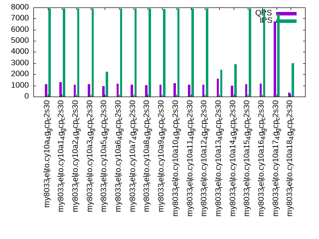

This is a report for the insert benchmark with 160M docs and 8 client(s). It is generated by scripts (bash, awk, sed) and Tufte might not be impressed. An overview of the insert benchmark is here and a short update is here. Below, by DBMS, I mean DBMS+version.config. An example is my8020.c10b40 where my means MySQL, 8020 is version 8.0.20 and c10b40 is the name for the configuration file.
The test server is a c2-standard-30 from GCP with 15 cores, hyperthreads disabled, 120G RAM, XFS + SW RAID 0 on 4 NVMe devices (1.5TB). The benchmark was run with 8 client and there were 1 or 3 connections per client (1 for queries or inserts without rate limits, 1+1 for rate limited inserts+deletes). There are 8 tables, client per table. It loads 160M rows without secondary indexes, creates secondary indexes, then inserts 800M rows with a delete per insert to avoid growing the table. It then does 3 read+write tests for 1800s each that do queries as fast as possible with 100, 500 and then 1000 inserts/second/client concurrent with the queries and 1000 deletes/second to avoid growing the table. The database is cached by the OS but not by InnoDB.
The tested DBMS are:
The numbers are inserts/s for l.i0 and l.i1, indexed docs (or rows) /s for l.x and queries/s for q*.2. The values are the average rate over the entire test for inserts (IPS) and queries (QPS). The range of values for IPS and QPS is split into 3 parts: bottom 25%, middle 50%, top 25%. Values in the bottom 25% have a red background, values in the top 25% have a green background and values in the middle have no color. A gray background is used for values that can be ignored because the DBMS did not sustain the target insert rate. Red backgrounds are not used when the minimum value is within 80% of the max value.
| dbms | l.i0 | l.x | l.i1 | q100.1 | q500.1 | q1000.1 |
|---|---|---|---|---|---|---|
| my8033_rel_lto.cy10a_4g_gcp_c2s30 | 669456 | 899438 | 13210 | 3611 | 1923 | 1114 |
| my8033_rel_lto.cy10a1_4g_gcp_c2s30 | 661157 | 884530 | 14543 | 4038 | 2201 | 1297 |
| my8033_rel_lto.cy10a2_4g_gcp_c2s30 | 666667 | 894413 | 12835 | 3449 | 1884 | 1086 |
| my8033_rel_lto.cy10a3_4g_gcp_c2s30 | 672269 | 899438 | 12868 | 3464 | 1915 | 1112 |
| my8033_rel_lto.cy10a5_4g_gcp_c2s30 | 669456 | 889444 | 2308 | 2851 | 942 | 938 |
| my8033_rel_lto.cy10a6_4g_gcp_c2s30 | 666667 | 941765 | 12998 | 3702 | 2278 | 1162 |
| my8033_rel_lto.cy10a7_4g_gcp_c2s30 | 675105 | 860753 | 13477 | 3648 | 1917 | 1070 |
| my8033_rel_lto.cy10a8_4g_gcp_c2s30 | 666667 | 865405 | 13262 | 3673 | 1908 | 1006 |
| my8033_rel_lto.cy10a9_4g_gcp_c2s30 | 663900 | 842632 | 13450 | 3685 | 1898 | 1070 |
| my8033_rel_lto.cy10a10_4g_gcp_c2s30 | 663900 | 914857 | 12003 | 2875 | 2025 | 1198 |
| my8033_rel_lto.cy10a11_4g_gcp_c2s30 | 669456 | 947337 | 13141 | 3591 | 1929 | 1094 |
| my8033_rel_lto.cy10a12_4g_gcp_c2s30 | 669456 | 884530 | 13164 | 3651 | 1941 | 1094 |
| my8033_rel_lto.cy10a13_4g_gcp_c2s30 | 666667 | 904520 | 3647 | 15903 | 1473 | 1628 |
| my8033_rel_lto.cy10a14_4g_gcp_c2s30 | 666667 | 909659 | 3426 | 2956 | 1000 | 973 |
| my8033_rel_lto.cy10a15_4g_gcp_c2s30 | 663900 | 947337 | 13038 | 3600 | 1907 | 1104 |
| my8033_rel_lto.cy10a16_4g_gcp_c2s30 | 672269 | 812690 | 13188 | 3669 | 1815 | 1170 |
| my8033_rel_lto.cy10a17_4g_gcp_c2s30 | 675105 | 1127465 | 22423 | 9594 | 8859 | 6748 |
| my8033_rel_lto.cy10a18_4g_gcp_c2s30 | 653061 | 856150 | 7035 | 1675 | 668 | 366 |
This table has relative throughput, throughput for the DBMS relative to the DBMS in the first line, using the absolute throughput from the previous table. Values less than 0.95 have a yellow background. Values greater than 1.05 have a blue background.
| dbms | l.i0 | l.x | l.i1 | q100.1 | q500.1 | q1000.1 |
|---|---|---|---|---|---|---|
| my8033_rel_lto.cy10a_4g_gcp_c2s30 | 1.00 | 1.00 | 1.00 | 1.00 | 1.00 | 1.00 |
| my8033_rel_lto.cy10a1_4g_gcp_c2s30 | 0.99 | 0.98 | 1.10 | 1.12 | 1.14 | 1.16 |
| my8033_rel_lto.cy10a2_4g_gcp_c2s30 | 1.00 | 0.99 | 0.97 | 0.96 | 0.98 | 0.97 |
| my8033_rel_lto.cy10a3_4g_gcp_c2s30 | 1.00 | 1.00 | 0.97 | 0.96 | 1.00 | 1.00 |
| my8033_rel_lto.cy10a5_4g_gcp_c2s30 | 1.00 | 0.99 | 0.17 | 0.79 | 0.49 | 0.84 |
| my8033_rel_lto.cy10a6_4g_gcp_c2s30 | 1.00 | 1.05 | 0.98 | 1.03 | 1.18 | 1.04 |
| my8033_rel_lto.cy10a7_4g_gcp_c2s30 | 1.01 | 0.96 | 1.02 | 1.01 | 1.00 | 0.96 |
| my8033_rel_lto.cy10a8_4g_gcp_c2s30 | 1.00 | 0.96 | 1.00 | 1.02 | 0.99 | 0.90 |
| my8033_rel_lto.cy10a9_4g_gcp_c2s30 | 0.99 | 0.94 | 1.02 | 1.02 | 0.99 | 0.96 |
| my8033_rel_lto.cy10a10_4g_gcp_c2s30 | 0.99 | 1.02 | 0.91 | 0.80 | 1.05 | 1.08 |
| my8033_rel_lto.cy10a11_4g_gcp_c2s30 | 1.00 | 1.05 | 0.99 | 0.99 | 1.00 | 0.98 |
| my8033_rel_lto.cy10a12_4g_gcp_c2s30 | 1.00 | 0.98 | 1.00 | 1.01 | 1.01 | 0.98 |
| my8033_rel_lto.cy10a13_4g_gcp_c2s30 | 1.00 | 1.01 | 0.28 | 4.40 | 0.77 | 1.46 |
| my8033_rel_lto.cy10a14_4g_gcp_c2s30 | 1.00 | 1.01 | 0.26 | 0.82 | 0.52 | 0.87 |
| my8033_rel_lto.cy10a15_4g_gcp_c2s30 | 0.99 | 1.05 | 0.99 | 1.00 | 0.99 | 0.99 |
| my8033_rel_lto.cy10a16_4g_gcp_c2s30 | 1.00 | 0.90 | 1.00 | 1.02 | 0.94 | 1.05 |
| my8033_rel_lto.cy10a17_4g_gcp_c2s30 | 1.01 | 1.25 | 1.70 | 2.66 | 4.61 | 6.06 |
| my8033_rel_lto.cy10a18_4g_gcp_c2s30 | 0.98 | 0.95 | 0.53 | 0.46 | 0.35 | 0.33 |
This lists the average rate of inserts/s for the tests that do inserts concurrent with queries. For such tests the query rate is listed in the table above. The read+write tests are setup so that the insert rate should match the target rate every second. Cells that are not at least 95% of the target have a red background to indicate a failure to satisfy the target.
| dbms | q100.1 | q500.1 | q1000.1 |
|---|---|---|---|
| my8033_rel_lto.cy10a_4g_gcp_c2s30 | 792 | 3958 | 7912 |
| my8033_rel_lto.cy10a1_4g_gcp_c2s30 | 792 | 3960 | 7916 |
| my8033_rel_lto.cy10a2_4g_gcp_c2s30 | 791 | 3958 | 7903 |
| my8033_rel_lto.cy10a3_4g_gcp_c2s30 | 792 | 3960 | 7916 |
| my8033_rel_lto.cy10a5_4g_gcp_c2s30 | 792 | 2254 | 2254 |
| my8033_rel_lto.cy10a6_4g_gcp_c2s30 | 792 | 3962 | 7925 |
| my8033_rel_lto.cy10a7_4g_gcp_c2s30 | 791 | 3958 | 7916 |
| my8033_rel_lto.cy10a8_4g_gcp_c2s30 | 791 | 3965 | 7916 |
| my8033_rel_lto.cy10a9_4g_gcp_c2s30 | 789 | 3965 | 7852 |
| my8033_rel_lto.cy10a10_4g_gcp_c2s30 | 792 | 3960 | 7921 |
| my8033_rel_lto.cy10a11_4g_gcp_c2s30 | 792 | 3960 | 7921 |
| my8033_rel_lto.cy10a12_4g_gcp_c2s30 | 792 | 3958 | 7916 |
| my8033_rel_lto.cy10a13_4g_gcp_c2s30 | 796 | 3324 | 2423 |
| my8033_rel_lto.cy10a14_4g_gcp_c2s30 | 792 | 2910 | 2923 |
| my8033_rel_lto.cy10a15_4g_gcp_c2s30 | 792 | 3958 | 7921 |
| my8033_rel_lto.cy10a16_4g_gcp_c2s30 | 792 | 3915 | 7860 |
| my8033_rel_lto.cy10a17_4g_gcp_c2s30 | 781 | 3808 | 7419 |
| my8033_rel_lto.cy10a18_4g_gcp_c2s30 | 699 | 2782 | 2974 |
| target | 800 | 4000 | 8000 |
l.i0: load without secondary indexes. Graphs for performance per 1-second interval are here.
Average throughput:
Insert response time histogram: each cell has the percentage of responses that take <= the time in the header and max is the max response time in seconds. For the max column values in the top 25% of the range have a red background and in the bottom 25% of the range have a green background. The red background is not used when the min value is within 80% of the max value.
| dbms | 256us | 1ms | 4ms | 16ms | 64ms | 256ms | 1s | 4s | 16s | gt | max |
|---|---|---|---|---|---|---|---|---|---|---|---|
| my8033_rel_lto.cy10a_4g_gcp_c2s30 | 16.435 | 83.325 | 0.199 | 0.026 | 0.014 | 0.221 | |||||
| my8033_rel_lto.cy10a1_4g_gcp_c2s30 | 16.079 | 83.678 | 0.203 | 0.026 | 0.014 | 0.221 | |||||
| my8033_rel_lto.cy10a2_4g_gcp_c2s30 | 17.822 | 81.935 | 0.204 | 0.025 | 0.014 | 0.223 | |||||
| my8033_rel_lto.cy10a3_4g_gcp_c2s30 | 24.435 | 75.330 | 0.206 | 0.015 | 0.014 | 0.223 | |||||
| my8033_rel_lto.cy10a5_4g_gcp_c2s30 | 24.665 | 75.093 | 0.202 | 0.025 | 0.014 | 0.222 | |||||
| my8033_rel_lto.cy10a6_4g_gcp_c2s30 | 17.941 | 81.815 | 0.207 | 0.022 | 0.014 | 0.221 | |||||
| my8033_rel_lto.cy10a7_4g_gcp_c2s30 | 25.863 | 73.899 | 0.200 | 0.023 | 0.014 | 0.256 | |||||
| my8033_rel_lto.cy10a8_4g_gcp_c2s30 | 14.400 | 85.360 | 0.198 | 0.028 | 0.014 | 0.223 | |||||
| my8033_rel_lto.cy10a9_4g_gcp_c2s30 | 22.703 | 77.049 | 0.210 | 0.024 | 0.014 | 0.218 | |||||
| my8033_rel_lto.cy10a10_4g_gcp_c2s30 | 16.812 | 82.955 | 0.190 | 0.028 | 0.014 | 0.212 | |||||
| my8033_rel_lto.cy10a11_4g_gcp_c2s30 | 25.695 | 74.049 | 0.211 | 0.031 | 0.014 | 0.238 | |||||
| my8033_rel_lto.cy10a12_4g_gcp_c2s30 | 21.021 | 78.732 | 0.199 | 0.033 | 0.014 | 0.252 | |||||
| my8033_rel_lto.cy10a13_4g_gcp_c2s30 | 22.184 | 77.580 | 0.202 | 0.020 | 0.014 | 0.249 | |||||
| my8033_rel_lto.cy10a14_4g_gcp_c2s30 | 16.750 | 83.012 | 0.200 | 0.024 | 0.014 | 0.213 | |||||
| my8033_rel_lto.cy10a15_4g_gcp_c2s30 | 17.990 | 81.769 | 0.200 | 0.026 | 0.014 | 0.223 | |||||
| my8033_rel_lto.cy10a16_4g_gcp_c2s30 | 24.216 | 75.546 | 0.199 | 0.024 | 0.014 | 0.219 | |||||
| my8033_rel_lto.cy10a17_4g_gcp_c2s30 | 22.521 | 77.252 | 0.191 | 0.022 | 0.011 | 0.003 | 0.314 | ||||
| my8033_rel_lto.cy10a18_4g_gcp_c2s30 | 7.945 | 91.809 | 0.215 | 0.017 | 0.013 | 0.002 | 0.424 |
Performance metrics for the DBMS listed above. Some are normalized by throughput, others are not. Legend for results is here.
ips qps rps rmbps wps wmbps rpq rkbpq wpi wkbpi csps cpups cspq cpupq dbgb1 dbgb2 rss maxop p50 p99 tag 669456 0 0 0.0 1170.7 168.8 0.000 0.000 0.002 0.258 182889 73.2 0.273 16 10.6 139.1 4.7 0.221 90401 70624 160m.my8033_rel_lto.cy10a_4g_gcp_c2s30 661157 0 0 0.0 1215.6 169.2 0.000 0.000 0.002 0.262 164481 73.0 0.249 17 10.6 139.1 4.7 0.221 89536 68725 160m.my8033_rel_lto.cy10a1_4g_gcp_c2s30 666667 0 0 0.0 1166.2 168.0 0.000 0.000 0.002 0.258 172254 72.5 0.258 16 10.6 139.1 4.7 0.223 91000 70451 160m.my8033_rel_lto.cy10a2_4g_gcp_c2s30 672269 0 0 0.0 1182.8 168.7 0.000 0.000 0.002 0.257 186314 73.1 0.277 16 10.6 139.1 4.7 0.223 91898 71323 160m.my8033_rel_lto.cy10a3_4g_gcp_c2s30 669456 0 0 0.0 1177.6 171.9 0.000 0.000 0.002 0.263 192902 73.0 0.288 16 10.6 139.1 4.7 0.222 91101 72648 160m.my8033_rel_lto.cy10a5_4g_gcp_c2s30 666667 0 0 0.0 1351.8 178.4 0.000 0.000 0.002 0.274 171816 72.7 0.258 16 10.6 139.1 4.7 0.221 90233 69472 160m.my8033_rel_lto.cy10a6_4g_gcp_c2s30 675105 0 0 0.0 1177.0 169.3 0.000 0.000 0.002 0.257 182323 73.0 0.270 16 10.6 139.1 4.6 0.256 91500 68624 160m.my8033_rel_lto.cy10a7_4g_gcp_c2s30 666667 0 0 0.0 1164.9 164.9 0.000 0.000 0.002 0.253 173303 72.7 0.260 16 10.6 139.1 4.3 0.223 90302 69747 160m.my8033_rel_lto.cy10a8_4g_gcp_c2s30 663900 0 0 0.0 1215.2 165.8 0.000 0.000 0.002 0.256 181587 72.4 0.274 16 10.6 139.1 3.8 0.218 90244 70822 160m.my8033_rel_lto.cy10a9_4g_gcp_c2s30 663900 0 0 0.0 1184.0 168.8 0.000 0.000 0.002 0.260 181562 73.0 0.273 16 10.6 139.1 4.7 0.212 89802 71249 160m.my8033_rel_lto.cy10a10_4g_gcp_c2s30 669456 0 0 0.0 1363.0 181.3 0.000 0.000 0.002 0.277 188975 73.0 0.282 16 10.6 27.1 4.7 0.238 91032 69525 160m.my8033_rel_lto.cy10a11_4g_gcp_c2s30 669456 0 0 0.0 1184.9 168.6 0.000 0.000 0.002 0.258 187538 73.1 0.280 16 10.6 43.1 4.7 0.252 90988 69693 160m.my8033_rel_lto.cy10a12_4g_gcp_c2s30 666667 0 0 0.0 1167.7 165.8 0.000 0.000 0.002 0.255 191892 73.1 0.288 16 10.6 139.1 4.7 0.249 91201 68521 160m.my8033_rel_lto.cy10a13_4g_gcp_c2s30 666667 0 0 0.0 1161.9 167.2 0.000 0.000 0.002 0.257 165641 72.5 0.248 16 10.6 139.1 4.7 0.213 90301 70150 160m.my8033_rel_lto.cy10a14_4g_gcp_c2s30 663900 0 0 0.0 1163.7 165.1 0.000 0.000 0.002 0.255 174445 72.5 0.263 16 10.6 139.1 4.7 0.223 90636 70622 160m.my8033_rel_lto.cy10a15_4g_gcp_c2s30 672269 0 0 0.0 1133.0 164.2 0.000 0.000 0.002 0.250 180804 73.2 0.269 16 10.6 139.1 4.7 0.219 90833 72245 160m.my8033_rel_lto.cy10a16_4g_gcp_c2s30 675105 0 0 0.0 458.7 136.5 0.000 0.000 0.001 0.207 232544 72.8 0.344 16 10.6 139.1 4.7 0.314 92248 64430 160m.my8033_rel_lto.cy10a17_4g_gcp_c2s30 653061 0 0 0.0 1349.2 164.3 0.000 0.000 0.002 0.258 214049 73.0 0.328 17 10.6 139.1 4.7 0.424 88803 64984 160m.my8033_rel_lto.cy10a18_4g_gcp_c2s30
l.x: create secondary indexes.
Average throughput:
Performance metrics for the DBMS listed above. Some are normalized by throughput, others are not. Legend for results is here.
ips qps rps rmbps wps wmbps rpq rkbpq wpi wkbpi csps cpups cspq cpupq dbgb1 dbgb2 rss maxop p50 p99 tag 899438 0 4570 290.8 16317.1 897.1 0.005 0.331 0.018 1.021 102403 68.6 0.114 11 23.5 152.1 4.7 0.008 NA NA 160m.my8033_rel_lto.cy10a_4g_gcp_c2s30 884530 0 4443 282.8 16270.0 874.7 0.005 0.327 0.018 1.013 101111 66.9 0.114 11 23.5 152.1 4.7 0.011 NA NA 160m.my8033_rel_lto.cy10a1_4g_gcp_c2s30 894413 0 4570 290.9 16422.7 895.5 0.005 0.333 0.018 1.025 96899 69.1 0.108 12 23.5 152.1 4.7 0.011 NA NA 160m.my8033_rel_lto.cy10a2_4g_gcp_c2s30 899438 0 4571 290.8 16467.3 897.8 0.005 0.331 0.018 1.022 97468 70.5 0.108 12 23.5 152.1 4.7 0.011 NA NA 160m.my8033_rel_lto.cy10a3_4g_gcp_c2s30 889444 0 4444 282.8 16154.7 874.2 0.005 0.326 0.018 1.007 99747 67.9 0.112 11 23.5 152.1 4.7 0.008 NA NA 160m.my8033_rel_lto.cy10a5_4g_gcp_c2s30 941765 0 4704 299.4 16087.2 903.9 0.005 0.326 0.017 0.983 87943 70.3 0.093 11 23.5 152.1 4.7 0.007 NA NA 160m.my8033_rel_lto.cy10a6_4g_gcp_c2s30 860753 0 4323 275.2 15687.9 850.8 0.005 0.327 0.018 1.012 101261 66.0 0.118 12 23.5 152.1 4.7 0.007 NA NA 160m.my8033_rel_lto.cy10a7_4g_gcp_c2s30 865405 0 4324 275.2 15427.6 850.5 0.005 0.326 0.018 1.006 106926 64.7 0.124 11 23.5 152.1 4.7 0.010 NA NA 160m.my8033_rel_lto.cy10a8_4g_gcp_c2s30 842632 0 4210 268.0 14774.8 827.5 0.005 0.326 0.018 1.006 108539 64.0 0.129 11 23.5 152.1 4.7 0.009 NA NA 160m.my8033_rel_lto.cy10a9_4g_gcp_c2s30 914857 0 4570 290.8 16028.2 898.3 0.005 0.326 0.018 1.005 112840 69.0 0.123 11 23.5 152.1 4.7 0.020 NA NA 160m.my8033_rel_lto.cy10a10_4g_gcp_c2s30 947337 0 4847 308.4 16281.2 929.7 0.005 0.333 0.017 1.005 90529 72.1 0.096 11 23.5 40.1 4.7 0.021 NA NA 160m.my8033_rel_lto.cy10a11_4g_gcp_c2s30 884530 0 4444 282.7 16098.7 871.3 0.005 0.327 0.018 1.009 95908 68.2 0.108 12 23.5 56.1 4.7 0.007 NA NA 160m.my8033_rel_lto.cy10a12_4g_gcp_c2s30 904520 0 4571 290.8 16390.6 896.9 0.005 0.329 0.018 1.015 100712 68.6 0.111 11 23.5 152.1 4.7 0.010 NA NA 160m.my8033_rel_lto.cy10a13_4g_gcp_c2s30 909659 0 4570 290.9 16267.2 898.3 0.005 0.327 0.018 1.011 98044 69.1 0.108 11 23.5 152.1 4.7 0.013 NA NA 160m.my8033_rel_lto.cy10a14_4g_gcp_c2s30 947337 0 4848 308.6 16544.1 945.6 0.005 0.334 0.017 1.022 96466 71.4 0.102 11 23.5 152.1 4.7 0.004 NA NA 160m.my8033_rel_lto.cy10a15_4g_gcp_c2s30 812690 0 4103 261.1 15416.5 813.3 0.005 0.329 0.019 1.025 112127 61.1 0.138 11 23.5 152.1 4.7 0.037 NA NA 160m.my8033_rel_lto.cy10a16_4g_gcp_c2s30 1127465 0 5715 363.6 12594.0 982.5 0.005 0.330 0.011 0.892 46109 81.6 0.041 11 23.5 152.1 4.7 0.007 NA NA 160m.my8033_rel_lto.cy10a17_4g_gcp_c2s30 856150 0 4323 275.2 16292.8 850.7 0.005 0.329 0.019 1.017 107963 67.2 0.126 12 23.5 152.1 4.7 0.015 NA NA 160m.my8033_rel_lto.cy10a18_4g_gcp_c2s30
l.i1: continue load after secondary indexes created. Graphs for performance per 1-second interval are here.
Average throughput:
Insert response time histogram: each cell has the percentage of responses that take <= the time in the header and max is the max response time in seconds. For the max column values in the top 25% of the range have a red background and in the bottom 25% of the range have a green background. The red background is not used when the min value is within 80% of the max value.
| dbms | 256us | 1ms | 4ms | 16ms | 64ms | 256ms | 1s | 4s | 16s | gt | max |
|---|---|---|---|---|---|---|---|---|---|---|---|
| my8033_rel_lto.cy10a_4g_gcp_c2s30 | 0.392 | 26.000 | 67.618 | 5.665 | 0.324 | 0.604 | |||||
| my8033_rel_lto.cy10a1_4g_gcp_c2s30 | 0.648 | 32.808 | 62.067 | 4.112 | 0.364 | nonzero | 1.345 | ||||
| my8033_rel_lto.cy10a2_4g_gcp_c2s30 | 0.494 | 25.584 | 66.290 | 7.402 | 0.229 | 0.684 | |||||
| my8033_rel_lto.cy10a3_4g_gcp_c2s30 | 0.375 | 25.429 | 66.628 | 7.331 | 0.237 | 0.697 | |||||
| my8033_rel_lto.cy10a5_4g_gcp_c2s30 | 0.012 | 0.019 | 99.512 | 0.456 | 0.618 | ||||||
| my8033_rel_lto.cy10a6_4g_gcp_c2s30 | 0.399 | 24.504 | 68.508 | 6.368 | 0.221 | 0.686 | |||||
| my8033_rel_lto.cy10a7_4g_gcp_c2s30 | 0.539 | 32.598 | 60.376 | 5.978 | 0.509 | nonzero | 2.138 | ||||
| my8033_rel_lto.cy10a8_4g_gcp_c2s30 | 0.327 | 29.609 | 64.038 | 5.517 | 0.509 | 0.766 | |||||
| my8033_rel_lto.cy10a9_4g_gcp_c2s30 | 0.278 | 34.296 | 58.699 | 6.220 | 0.507 | 0.912 | |||||
| my8033_rel_lto.cy10a10_4g_gcp_c2s30 | 0.227 | 26.659 | 63.687 | 9.038 | 0.389 | 0.583 | |||||
| my8033_rel_lto.cy10a11_4g_gcp_c2s30 | 0.471 | 26.211 | 66.926 | 6.063 | 0.330 | 0.740 | |||||
| my8033_rel_lto.cy10a12_4g_gcp_c2s30 | 0.421 | 25.991 | 67.385 | 5.898 | 0.305 | 0.886 | |||||
| my8033_rel_lto.cy10a13_4g_gcp_c2s30 | 0.023 | 5.285 | 38.246 | 49.994 | 6.453 | 0.584 | |||||
| my8033_rel_lto.cy10a14_4g_gcp_c2s30 | 36.732 | 55.353 | 6.376 | 1.185 | 0.354 | 0.546 | |||||
| my8033_rel_lto.cy10a15_4g_gcp_c2s30 | 0.390 | 25.258 | 67.934 | 6.102 | 0.315 | 0.672 | |||||
| my8033_rel_lto.cy10a16_4g_gcp_c2s30 | 0.195 | 22.842 | 71.131 | 5.560 | 0.267 | 0.005 | 3.347 | ||||
| my8033_rel_lto.cy10a17_4g_gcp_c2s30 | 0.500 | 62.024 | 36.349 | 1.030 | 0.039 | 0.055 | 0.003 | 6.324 | |||
| my8033_rel_lto.cy10a18_4g_gcp_c2s30 | 0.227 | 9.085 | 57.471 | 32.983 | 0.205 | 0.016 | 0.012 | 6.339 |
Delete response time histogram: each cell has the percentage of responses that take <= the time in the header and max is the max response time in seconds. For the max column values in the top 25% of the range have a red background and in the bottom 25% of the range have a green background. The red background is not used when the min value is within 80% of the max value.
| dbms | 256us | 1ms | 4ms | 16ms | 64ms | 256ms | 1s | 4s | 16s | gt | max |
|---|---|---|---|---|---|---|---|---|---|---|---|
| my8033_rel_lto.cy10a_4g_gcp_c2s30 | 1.351 | 29.736 | 65.027 | 3.806 | 0.080 | 0.602 | |||||
| my8033_rel_lto.cy10a1_4g_gcp_c2s30 | 1.676 | 36.799 | 58.586 | 2.789 | 0.150 | nonzero | 1.066 | ||||
| my8033_rel_lto.cy10a2_4g_gcp_c2s30 | 1.472 | 29.467 | 63.550 | 5.477 | 0.033 | 0.715 | |||||
| my8033_rel_lto.cy10a3_4g_gcp_c2s30 | 1.325 | 29.200 | 63.992 | 5.447 | 0.036 | 0.539 | |||||
| my8033_rel_lto.cy10a5_4g_gcp_c2s30 | 0.021 | 0.006 | 0.152 | 99.819 | 0.002 | 0.294 | |||||
| my8033_rel_lto.cy10a6_4g_gcp_c2s30 | 1.359 | 28.252 | 65.873 | 4.474 | 0.043 | 0.767 | |||||
| my8033_rel_lto.cy10a7_4g_gcp_c2s30 | 1.456 | 35.732 | 58.369 | 4.258 | 0.184 | nonzero | 1.357 | ||||
| my8033_rel_lto.cy10a8_4g_gcp_c2s30 | 1.170 | 33.190 | 61.780 | 3.706 | 0.155 | 0.690 | |||||
| my8033_rel_lto.cy10a9_4g_gcp_c2s30 | 1.065 | 37.765 | 56.641 | 4.375 | 0.154 | 0.824 | |||||
| my8033_rel_lto.cy10a10_4g_gcp_c2s30 | 1.283 | 32.512 | 60.205 | 5.845 | 0.156 | 0.569 | |||||
| my8033_rel_lto.cy10a11_4g_gcp_c2s30 | 1.465 | 29.937 | 64.373 | 4.144 | 0.081 | 0.629 | |||||
| my8033_rel_lto.cy10a12_4g_gcp_c2s30 | 1.401 | 29.578 | 64.941 | 4.011 | 0.069 | 0.766 | |||||
| my8033_rel_lto.cy10a13_4g_gcp_c2s30 | 8.324 | 31.033 | 16.673 | 41.887 | 2.084 | 0.392 | |||||
| my8033_rel_lto.cy10a14_4g_gcp_c2s30 | 0.019 | 0.006 | 5.307 | 94.668 | 0.250 | ||||||
| my8033_rel_lto.cy10a15_4g_gcp_c2s30 | 1.351 | 28.861 | 65.497 | 4.214 | 0.076 | 0.545 | |||||
| my8033_rel_lto.cy10a16_4g_gcp_c2s30 | 1.008 | 26.540 | 68.672 | 3.741 | 0.034 | 0.004 | nonzero | 4.521 | |||
| my8033_rel_lto.cy10a17_4g_gcp_c2s30 | 1.916 | 75.149 | 22.454 | 0.411 | 0.028 | 0.040 | 0.002 | 6.179 | |||
| my8033_rel_lto.cy10a18_4g_gcp_c2s30 | 1.122 | 19.066 | 63.227 | 16.502 | 0.063 | 0.012 | 0.009 | 6.248 |
Performance metrics for the DBMS listed above. Some are normalized by throughput, others are not. Legend for results is here.
ips qps rps rmbps wps wmbps rpq rkbpq wpi wkbpi csps cpups cspq cpupq dbgb1 dbgb2 rss maxop p50 p99 tag 13210 0 2 0.6 16018.5 407.2 0.000 0.047 1.213 31.569 247329 45.5 18.723 517 40.9 176.1 4.8 0.604 1648 200 160m.my8033_rel_lto.cy10a_4g_gcp_c2s30 14543 0 3 0.7 17757.7 433.0 0.000 0.047 1.221 30.486 280150 47.1 19.264 486 41.0 176.4 4.8 1.345 1799 200 160m.my8033_rel_lto.cy10a1_4g_gcp_c2s30 12835 0 2 0.6 17814.0 427.9 0.000 0.047 1.388 34.142 258728 44.4 20.158 519 40.9 176.2 4.8 0.684 1598 250 160m.my8033_rel_lto.cy10a2_4g_gcp_c2s30 12868 0 2 0.6 17856.9 430.6 0.000 0.046 1.388 34.265 258860 44.7 20.117 521 40.9 176.2 4.8 0.697 1648 250 160m.my8033_rel_lto.cy10a3_4g_gcp_c2s30 2308 0 0 0.0 26873.6 456.6 0.000 0.016 11.644 202.561 410600 15.3 177.903 994 40.0 173.3 4.8 0.618 300 250 160m.my8033_rel_lto.cy10a5_4g_gcp_c2s30 12998 0 2 0.6 17373.4 425.8 0.000 0.048 1.337 33.544 255930 45.2 19.691 522 40.9 176.2 4.8 0.686 1648 250 160m.my8033_rel_lto.cy10a6_4g_gcp_c2s30 13477 0 3 0.6 13986.0 380.3 0.000 0.047 1.038 28.895 232521 44.6 17.253 496 40.9 176.2 4.8 2.138 1698 200 160m.my8033_rel_lto.cy10a7_4g_gcp_c2s30 13262 0 2 0.6 12577.3 356.9 0.000 0.045 0.948 27.558 221935 44.3 16.734 501 40.8 175.9 4.8 0.766 1650 150 160m.my8033_rel_lto.cy10a8_4g_gcp_c2s30 13450 0 3 0.6 11991.3 351.4 0.000 0.047 0.892 26.751 218831 44.9 16.270 501 40.8 175.9 4.8 0.912 1699 150 160m.my8033_rel_lto.cy10a9_4g_gcp_c2s30 12003 0 3 0.6 19808.3 511.5 0.000 0.054 1.650 43.637 279213 48.0 23.262 600 39.7 173.8 4.8 0.583 1548 250 160m.my8033_rel_lto.cy10a10_4g_gcp_c2s30 13141 0 0 0.0 16042.3 403.8 0.000 0.000 1.221 31.465 245630 44.8 18.692 511 40.9 64.1 4.8 0.740 1648 200 160m.my8033_rel_lto.cy10a11_4g_gcp_c2s30 13164 0 0 0.0 16738.0 415.4 0.000 0.000 1.271 32.316 250873 45.1 19.057 514 40.9 80.1 4.8 0.886 1648 200 160m.my8033_rel_lto.cy10a12_4g_gcp_c2s30 3647 0 1 0.2 21595.7 444.9 0.000 0.056 5.922 124.939 271916 19.4 74.563 798 35.9 165.8 4.8 0.584 300 150 160m.my8033_rel_lto.cy10a13_4g_gcp_c2s30 3426 0 0 0.1 23466.8 430.9 0.000 0.031 6.851 128.796 294784 14.2 86.056 622 40.0 173.3 4.8 0.546 450 250 160m.my8033_rel_lto.cy10a14_4g_gcp_c2s30 13038 0 2 0.6 16556.8 413.9 0.000 0.047 1.270 32.510 250578 44.9 19.219 517 40.9 176.1 4.8 0.672 1648 200 160m.my8033_rel_lto.cy10a15_4g_gcp_c2s30 13188 0 3 0.6 11668.7 346.4 0.000 0.048 0.885 26.895 221532 45.4 16.798 516 40.7 175.8 4.8 3.347 1698 200 160m.my8033_rel_lto.cy10a16_4g_gcp_c2s30 22423 0 37 2.9 28152.6 619.0 0.002 0.134 1.256 28.267 212668 66.2 9.484 443 144.9 327.7 4.7 6.324 2997 0 160m.my8033_rel_lto.cy10a17_4g_gcp_c2s30 7035 0 32 1.4 16319.5 368.9 0.004 0.203 2.320 53.704 233881 31.0 33.247 661 155.2 344.5 4.8 6.339 800 0 160m.my8033_rel_lto.cy10a18_4g_gcp_c2s30
q100.1: range queries with 100 insert/s per client. Graphs for performance per 1-second interval are here.
Average throughput:
Query response time histogram: each cell has the percentage of responses that take <= the time in the header and max is the max response time in seconds. For max values in the top 25% of the range have a red background and in the bottom 25% of the range have a green background. The red background is not used when the min value is within 80% of the max value.
| dbms | 256us | 1ms | 4ms | 16ms | 64ms | 256ms | 1s | 4s | 16s | gt | max |
|---|---|---|---|---|---|---|---|---|---|---|---|
| my8033_rel_lto.cy10a_4g_gcp_c2s30 | 31.176 | 28.790 | 20.397 | 19.135 | 0.495 | 0.007 | nonzero | 0.336 | |||
| my8033_rel_lto.cy10a1_4g_gcp_c2s30 | 28.575 | 33.494 | 21.464 | 15.895 | 0.571 | 0.002 | nonzero | 0.642 | |||
| my8033_rel_lto.cy10a2_4g_gcp_c2s30 | 30.611 | 28.005 | 20.515 | 20.332 | 0.529 | 0.008 | nonzero | 0.423 | |||
| my8033_rel_lto.cy10a3_4g_gcp_c2s30 | 30.448 | 28.229 | 20.613 | 20.163 | 0.539 | 0.008 | nonzero | 0.470 | |||
| my8033_rel_lto.cy10a5_4g_gcp_c2s30 | 29.564 | 22.949 | 19.322 | 27.665 | 0.499 | 0.001 | 0.106 | ||||
| my8033_rel_lto.cy10a6_4g_gcp_c2s30 | 30.888 | 28.411 | 21.675 | 18.579 | 0.441 | 0.006 | 0.198 | ||||
| my8033_rel_lto.cy10a7_4g_gcp_c2s30 | 31.231 | 28.086 | 20.903 | 19.361 | 0.410 | 0.008 | nonzero | 0.564 | |||
| my8033_rel_lto.cy10a8_4g_gcp_c2s30 | 31.433 | 27.603 | 20.631 | 20.042 | 0.285 | 0.006 | nonzero | 0.298 | |||
| my8033_rel_lto.cy10a9_4g_gcp_c2s30 | 30.954 | 27.554 | 21.234 | 20.003 | 0.248 | 0.007 | nonzero | 0.488 | |||
| my8033_rel_lto.cy10a10_4g_gcp_c2s30 | 23.921 | 28.187 | 15.820 | 31.631 | 0.433 | 0.008 | nonzero | 0.286 | |||
| my8033_rel_lto.cy10a11_4g_gcp_c2s30 | 31.298 | 28.521 | 20.447 | 19.221 | 0.506 | 0.007 | nonzero | 0.304 | |||
| my8033_rel_lto.cy10a12_4g_gcp_c2s30 | 31.183 | 28.824 | 20.579 | 18.958 | 0.450 | 0.006 | nonzero | 0.373 | |||
| my8033_rel_lto.cy10a13_4g_gcp_c2s30 | 59.464 | 33.380 | 4.747 | 2.361 | 0.048 | nonzero | 0.185 | ||||
| my8033_rel_lto.cy10a14_4g_gcp_c2s30 | 29.189 | 24.186 | 20.239 | 25.848 | 0.531 | 0.008 | 0.110 | ||||
| my8033_rel_lto.cy10a15_4g_gcp_c2s30 | 31.089 | 28.877 | 20.268 | 19.255 | 0.506 | 0.006 | nonzero | 0.396 | |||
| my8033_rel_lto.cy10a16_4g_gcp_c2s30 | 30.835 | 29.701 | 20.380 | 18.537 | 0.539 | 0.007 | nonzero | nonzero | 1.084 | ||
| my8033_rel_lto.cy10a17_4g_gcp_c2s30 | 19.366 | 73.905 | 4.583 | 2.046 | 0.070 | 0.012 | 0.011 | 0.007 | 2.810 | ||
| my8033_rel_lto.cy10a18_4g_gcp_c2s30 | 26.764 | 17.512 | 17.019 | 37.662 | 0.979 | 0.031 | 0.015 | 0.010 | 0.008 | 6.544 |
Insert response time histogram: each cell has the percentage of responses that take <= the time in the header and max is the max response time in seconds. For max values in the top 25% of the range have a red background and in the bottom 25% of the range have a green background. The red background is not used when the min value is within 80% of the max value.
| dbms | 256us | 1ms | 4ms | 16ms | 64ms | 256ms | 1s | 4s | 16s | gt | max |
|---|---|---|---|---|---|---|---|---|---|---|---|
| my8033_rel_lto.cy10a_4g_gcp_c2s30 | 25.420 | 59.705 | 14.354 | 0.479 | 0.042 | 0.512 | |||||
| my8033_rel_lto.cy10a1_4g_gcp_c2s30 | 21.965 | 65.792 | 12.167 | 0.066 | 0.010 | 0.511 | |||||
| my8033_rel_lto.cy10a2_4g_gcp_c2s30 | 24.476 | 59.215 | 15.712 | 0.562 | 0.035 | 0.813 | |||||
| my8033_rel_lto.cy10a3_4g_gcp_c2s30 | 23.427 | 59.542 | 16.372 | 0.635 | 0.024 | 0.507 | |||||
| my8033_rel_lto.cy10a5_4g_gcp_c2s30 | 0.010 | 0.205 | 43.483 | 56.302 | 0.166 | ||||||
| my8033_rel_lto.cy10a6_4g_gcp_c2s30 | 25.569 | 59.156 | 14.656 | 0.618 | 0.212 | ||||||
| my8033_rel_lto.cy10a7_4g_gcp_c2s30 | 26.281 | 59.569 | 12.986 | 1.083 | 0.080 | 0.631 | |||||
| my8033_rel_lto.cy10a8_4g_gcp_c2s30 | 31.312 | 59.101 | 9.000 | 0.562 | 0.024 | 0.377 | |||||
| my8033_rel_lto.cy10a9_4g_gcp_c2s30 | 30.486 | 59.708 | 8.951 | 0.823 | 0.031 | 0.405 | |||||
| my8033_rel_lto.cy10a10_4g_gcp_c2s30 | 14.667 | 69.503 | 15.333 | 0.483 | 0.014 | 0.368 | |||||
| my8033_rel_lto.cy10a11_4g_gcp_c2s30 | 25.358 | 60.587 | 13.493 | 0.556 | 0.007 | 0.419 | |||||
| my8033_rel_lto.cy10a12_4g_gcp_c2s30 | 25.611 | 60.486 | 13.476 | 0.406 | 0.021 | 0.582 | |||||
| my8033_rel_lto.cy10a13_4g_gcp_c2s30 | 31.052 | 27.781 | 33.361 | 7.538 | 0.267 | 0.452 | |||||
| my8033_rel_lto.cy10a14_4g_gcp_c2s30 | 44.108 | 50.049 | 5.844 | 0.046 | |||||||
| my8033_rel_lto.cy10a15_4g_gcp_c2s30 | 26.135 | 59.788 | 13.500 | 0.566 | 0.010 | 0.349 | |||||
| my8033_rel_lto.cy10a16_4g_gcp_c2s30 | 23.649 | 62.441 | 13.236 | 0.552 | 0.108 | 0.014 | 1.393 | ||||
| my8033_rel_lto.cy10a17_4g_gcp_c2s30 | 27.250 | 60.073 | 5.292 | 1.285 | 3.010 | 3.090 | 2.749 | ||||
| my8033_rel_lto.cy10a18_4g_gcp_c2s30 | 7.868 | 51.569 | 37.392 | 0.951 | 0.378 | 1.226 | 0.615 | 9.456 |
Delete response time histogram: each cell has the percentage of responses that take <= the time in the header and max is the max response time in seconds. For max values in the top 25% of the range have a red background and in the bottom 25% of the range have a green background. The red background is not used when the min value is within 80% of the max value.
| dbms | 256us | 1ms | 4ms | 16ms | 64ms | 256ms | 1s | 4s | 16s | gt | max |
|---|---|---|---|---|---|---|---|---|---|---|---|
| my8033_rel_lto.cy10a_4g_gcp_c2s30 | 27.920 | 58.257 | 13.323 | 0.469 | 0.031 | 0.503 | |||||
| my8033_rel_lto.cy10a1_4g_gcp_c2s30 | 25.153 | 63.340 | 11.444 | 0.059 | 0.003 | 0.511 | |||||
| my8033_rel_lto.cy10a2_4g_gcp_c2s30 | 26.694 | 57.583 | 15.191 | 0.507 | 0.024 | 0.804 | |||||
| my8033_rel_lto.cy10a3_4g_gcp_c2s30 | 25.771 | 57.792 | 15.847 | 0.569 | 0.021 | 0.474 | |||||
| my8033_rel_lto.cy10a5_4g_gcp_c2s30 | 0.003 | 0.257 | 44.788 | 54.951 | 0.153 | ||||||
| my8033_rel_lto.cy10a6_4g_gcp_c2s30 | 28.194 | 57.056 | 14.260 | 0.490 | 0.213 | ||||||
| my8033_rel_lto.cy10a7_4g_gcp_c2s30 | 28.712 | 57.649 | 12.622 | 0.972 | 0.045 | 0.629 | |||||
| my8033_rel_lto.cy10a8_4g_gcp_c2s30 | 34.691 | 56.358 | 8.396 | 0.549 | 0.007 | 0.376 | |||||
| my8033_rel_lto.cy10a9_4g_gcp_c2s30 | 33.941 | 56.743 | 8.500 | 0.802 | 0.014 | 0.362 | |||||
| my8033_rel_lto.cy10a10_4g_gcp_c2s30 | 18.424 | 68.205 | 12.906 | 0.455 | 0.010 | 0.362 | |||||
| my8033_rel_lto.cy10a11_4g_gcp_c2s30 | 28.028 | 57.979 | 13.493 | 0.490 | 0.010 | 0.346 | |||||
| my8033_rel_lto.cy10a12_4g_gcp_c2s30 | 28.444 | 57.788 | 13.375 | 0.385 | 0.007 | 0.450 | |||||
| my8033_rel_lto.cy10a13_4g_gcp_c2s30 | 62.896 | 28.507 | 6.340 | 2.253 | 0.003 | 0.278 | |||||
| my8033_rel_lto.cy10a14_4g_gcp_c2s30 | 0.927 | 56.406 | 42.667 | 0.158 | |||||||
| my8033_rel_lto.cy10a15_4g_gcp_c2s30 | 28.663 | 57.372 | 13.462 | 0.493 | 0.010 | 0.282 | |||||
| my8033_rel_lto.cy10a16_4g_gcp_c2s30 | 27.198 | 59.389 | 12.778 | 0.521 | 0.104 | 0.010 | 1.459 | ||||
| my8033_rel_lto.cy10a17_4g_gcp_c2s30 | 64.826 | 28.146 | 1.135 | 0.903 | 2.385 | 2.604 | 2.586 | ||||
| my8033_rel_lto.cy10a18_4g_gcp_c2s30 | 12.819 | 53.955 | 30.351 | 0.729 | 0.323 | 1.229 | 0.594 | 6.144 |
Performance metrics for the DBMS listed above. Some are normalized by throughput, others are not. Legend for results is here.
ips qps rps rmbps wps wmbps rpq rkbpq wpi wkbpi csps cpups cspq cpupq dbgb1 dbgb2 rss maxop p50 p99 tag 792 3611 10 0.6 17863.1 355.7 0.003 0.171 22.554 459.842 289302 20.3 80.121 843 40.9 176.1 4.8 0.336 463 144 160m.my8033_rel_lto.cy10a_4g_gcp_c2s30 792 4038 10 0.6 18334.8 375.9 0.002 0.150 23.162 486.238 299893 22.2 74.268 825 41.0 176.4 4.8 0.642 511 176 160m.my8033_rel_lto.cy10a1_4g_gcp_c2s30 791 3449 11 0.5 18086.3 356.8 0.003 0.160 22.859 461.838 296342 20.2 85.914 878 40.9 176.2 4.8 0.423 447 144 160m.my8033_rel_lto.cy10a2_4g_gcp_c2s30 792 3464 11 0.5 18187.3 356.5 0.003 0.159 22.975 461.135 288295 20.3 83.238 879 40.9 176.2 4.8 0.470 432 128 160m.my8033_rel_lto.cy10a3_4g_gcp_c2s30 792 2851 3 0.1 20049.0 367.1 0.001 0.025 25.314 474.692 335779 18.1 117.788 952 40.0 173.3 4.8 0.106 352 272 160m.my8033_rel_lto.cy10a5_4g_gcp_c2s30 792 3702 10 0.6 19902.3 392.0 0.003 0.153 25.129 506.831 285966 20.9 77.242 847 40.9 176.2 4.8 0.198 463 128 160m.my8033_rel_lto.cy10a6_4g_gcp_c2s30 791 3648 9 0.6 17506.0 355.9 0.003 0.166 22.140 460.968 286538 20.3 78.557 835 40.9 176.2 4.8 0.564 464 128 160m.my8033_rel_lto.cy10a7_4g_gcp_c2s30 791 3673 9 0.5 17695.3 349.4 0.002 0.148 22.365 452.162 283016 20.3 77.059 829 40.8 175.9 4.8 0.298 448 112 160m.my8033_rel_lto.cy10a8_4g_gcp_c2s30 789 3685 9 0.5 17672.5 353.3 0.002 0.147 22.387 458.265 290335 20.5 78.793 835 40.8 175.9 4.8 0.488 479 144 160m.my8033_rel_lto.cy10a9_4g_gcp_c2s30 792 2875 10 0.5 20999.0 451.5 0.003 0.168 26.514 583.721 411583 23.5 143.174 1226 39.7 173.8 4.8 0.286 352 160 160m.my8033_rel_lto.cy10a10_4g_gcp_c2s30 792 3591 0 0.0 18075.3 352.9 0.000 0.000 22.822 456.228 284755 20.1 79.288 840 40.9 64.1 4.8 0.304 448 128 160m.my8033_rel_lto.cy10a11_4g_gcp_c2s30 792 3651 0 0.0 18190.9 354.1 0.000 0.000 22.968 457.819 285700 20.3 78.251 834 40.9 80.1 4.8 0.373 463 144 160m.my8033_rel_lto.cy10a12_4g_gcp_c2s30 796 15903 22 0.4 12083.7 251.4 0.001 0.026 15.180 323.412 238984 34.7 15.028 327 35.9 165.8 4.8 0.185 2813 112 160m.my8033_rel_lto.cy10a13_4g_gcp_c2s30 792 2956 32 0.6 19295.7 360.2 0.011 0.199 24.363 465.717 312846 18.3 105.820 928 40.0 173.3 4.8 0.110 368 240 160m.my8033_rel_lto.cy10a14_4g_gcp_c2s30 792 3600 9 0.5 17930.7 355.6 0.003 0.147 22.651 459.947 288621 20.2 80.168 842 40.9 176.2 4.8 0.396 448 144 160m.my8033_rel_lto.cy10a15_4g_gcp_c2s30 792 3669 6 0.5 17493.9 347.7 0.002 0.135 22.088 449.499 281229 20.2 76.650 826 40.7 175.8 4.8 1.084 464 128 160m.my8033_rel_lto.cy10a16_4g_gcp_c2s30 781 9594 1351 49.6 43930.8 734.3 0.141 5.293 56.257 962.873 181008 43.0 18.866 672 144.9 327.8 4.7 2.810 1470 0 160m.my8033_rel_lto.cy10a17_4g_gcp_c2s30 699 1675 1888 61.0 10264.6 219.7 1.128 37.294 14.693 322.075 201820 13.6 120.519 1218 155.2 344.6 4.8 6.544 288 0 160m.my8033_rel_lto.cy10a18_4g_gcp_c2s30
q500.1: range queries with 500 insert/s per client. Graphs for performance per 1-second interval are here.
Average throughput:
Query response time histogram: each cell has the percentage of responses that take <= the time in the header and max is the max response time in seconds. For max values in the top 25% of the range have a red background and in the bottom 25% of the range have a green background. The red background is not used when the min value is within 80% of the max value.
| dbms | 256us | 1ms | 4ms | 16ms | 64ms | 256ms | 1s | 4s | 16s | gt | max |
|---|---|---|---|---|---|---|---|---|---|---|---|
| my8033_rel_lto.cy10a_4g_gcp_c2s30 | 20.320 | 21.998 | 21.545 | 32.460 | 3.650 | 0.027 | nonzero | 0.269 | |||
| my8033_rel_lto.cy10a1_4g_gcp_c2s30 | 19.088 | 25.641 | 23.458 | 28.907 | 2.892 | 0.013 | 0.223 | ||||
| my8033_rel_lto.cy10a2_4g_gcp_c2s30 | 20.419 | 21.553 | 21.390 | 32.688 | 3.919 | 0.031 | 0.221 | ||||
| my8033_rel_lto.cy10a3_4g_gcp_c2s30 | 20.461 | 21.940 | 21.619 | 32.192 | 3.756 | 0.031 | nonzero | 0.257 | |||
| my8033_rel_lto.cy10a5_4g_gcp_c2s30 | 11.169 | 10.676 | 6.889 | 58.227 | 13.003 | 0.036 | 0.201 | ||||
| my8033_rel_lto.cy10a6_4g_gcp_c2s30 | 22.064 | 18.723 | 25.866 | 31.666 | 1.673 | 0.009 | 0.149 | ||||
| my8033_rel_lto.cy10a7_4g_gcp_c2s30 | 20.014 | 21.601 | 21.902 | 32.834 | 3.621 | 0.028 | 0.198 | ||||
| my8033_rel_lto.cy10a8_4g_gcp_c2s30 | 19.935 | 21.662 | 21.641 | 33.132 | 3.601 | 0.029 | 0.173 | ||||
| my8033_rel_lto.cy10a9_4g_gcp_c2s30 | 19.621 | 22.575 | 21.917 | 31.910 | 3.938 | 0.039 | nonzero | 0.430 | |||
| my8033_rel_lto.cy10a10_4g_gcp_c2s30 | 15.548 | 24.076 | 15.804 | 43.010 | 1.556 | 0.005 | 0.163 | ||||
| my8033_rel_lto.cy10a11_4g_gcp_c2s30 | 20.358 | 21.901 | 21.735 | 32.364 | 3.614 | 0.028 | nonzero | 0.270 | |||
| my8033_rel_lto.cy10a12_4g_gcp_c2s30 | 20.225 | 22.216 | 21.745 | 32.281 | 3.508 | 0.026 | nonzero | 0.258 | |||
| my8033_rel_lto.cy10a13_4g_gcp_c2s30 | 14.123 | 18.321 | 17.380 | 44.853 | 5.305 | 0.019 | 0.176 | ||||
| my8033_rel_lto.cy10a14_4g_gcp_c2s30 | 12.583 | 13.982 | 11.171 | 52.962 | 8.166 | 1.135 | 0.140 | ||||
| my8033_rel_lto.cy10a15_4g_gcp_c2s30 | 20.151 | 22.134 | 21.359 | 32.582 | 3.745 | 0.029 | 0.248 | ||||
| my8033_rel_lto.cy10a16_4g_gcp_c2s30 | 19.417 | 22.275 | 21.181 | 32.980 | 4.062 | 0.076 | 0.009 | nonzero | 2.335 | ||
| my8033_rel_lto.cy10a17_4g_gcp_c2s30 | 16.586 | 75.382 | 5.656 | 2.155 | 0.178 | 0.024 | 0.014 | 0.005 | 2.765 | ||
| my8033_rel_lto.cy10a18_4g_gcp_c2s30 | 15.682 | 12.785 | 12.144 | 49.137 | 9.577 | 0.560 | 0.067 | 0.026 | 0.021 | 12.040 |
Insert response time histogram: each cell has the percentage of responses that take <= the time in the header and max is the max response time in seconds. For max values in the top 25% of the range have a red background and in the bottom 25% of the range have a green background. The red background is not used when the min value is within 80% of the max value.
| dbms | 256us | 1ms | 4ms | 16ms | 64ms | 256ms | 1s | 4s | 16s | gt | max |
|---|---|---|---|---|---|---|---|---|---|---|---|
| my8033_rel_lto.cy10a_4g_gcp_c2s30 | 18.766 | 60.810 | 19.310 | 1.113 | 0.002 | 0.313 | |||||
| my8033_rel_lto.cy10a1_4g_gcp_c2s30 | 16.362 | 69.029 | 14.591 | 0.018 | 0.200 | ||||||
| my8033_rel_lto.cy10a2_4g_gcp_c2s30 | 22.056 | 58.609 | 18.124 | 1.210 | 0.001 | 0.294 | |||||
| my8033_rel_lto.cy10a3_4g_gcp_c2s30 | 19.379 | 58.459 | 20.777 | 1.384 | 0.001 | 0.275 | |||||
| my8033_rel_lto.cy10a5_4g_gcp_c2s30 | 0.001 | 0.007 | 0.069 | 99.917 | 0.007 | 0.295 | |||||
| my8033_rel_lto.cy10a6_4g_gcp_c2s30 | 23.221 | 62.242 | 13.856 | 0.681 | 0.203 | ||||||
| my8033_rel_lto.cy10a7_4g_gcp_c2s30 | 20.299 | 59.890 | 18.206 | 1.606 | 0.250 | ||||||
| my8033_rel_lto.cy10a8_4g_gcp_c2s30 | 19.349 | 58.213 | 20.661 | 1.776 | 0.222 | ||||||
| my8033_rel_lto.cy10a9_4g_gcp_c2s30 | 19.119 | 58.335 | 19.856 | 2.685 | 0.006 | 0.450 | |||||
| my8033_rel_lto.cy10a10_4g_gcp_c2s30 | 11.739 | 66.124 | 21.398 | 0.740 | 0.205 | ||||||
| my8033_rel_lto.cy10a11_4g_gcp_c2s30 | 19.322 | 60.133 | 19.344 | 1.197 | 0.004 | 0.369 | |||||
| my8033_rel_lto.cy10a12_4g_gcp_c2s30 | 18.783 | 60.400 | 19.699 | 1.112 | 0.006 | 0.325 | |||||
| my8033_rel_lto.cy10a13_4g_gcp_c2s30 | 0.038 | 2.769 | 55.831 | 37.547 | 3.816 | 0.430 | |||||
| my8033_rel_lto.cy10a14_4g_gcp_c2s30 | 30.203 | 55.748 | 14.047 | 0.002 | 0.076 | ||||||
| my8033_rel_lto.cy10a15_4g_gcp_c2s30 | 19.242 | 60.576 | 19.025 | 1.156 | 0.001 | 0.276 | |||||
| my8033_rel_lto.cy10a16_4g_gcp_c2s30 | 10.128 | 57.417 | 30.418 | 1.803 | 0.188 | 0.045 | 3.385 | ||||
| my8033_rel_lto.cy10a17_4g_gcp_c2s30 | 7.097 | 75.949 | 15.944 | 0.137 | 0.413 | 0.460 | 2.597 | ||||
| my8033_rel_lto.cy10a18_4g_gcp_c2s30 | 2.539 | 21.902 | 52.826 | 21.713 | 0.465 | 0.304 | 0.251 | 12.052 |
Delete response time histogram: each cell has the percentage of responses that take <= the time in the header and max is the max response time in seconds. For max values in the top 25% of the range have a red background and in the bottom 25% of the range have a green background. The red background is not used when the min value is within 80% of the max value.
| dbms | 256us | 1ms | 4ms | 16ms | 64ms | 256ms | 1s | 4s | 16s | gt | max |
|---|---|---|---|---|---|---|---|---|---|---|---|
| my8033_rel_lto.cy10a_4g_gcp_c2s30 | 21.268 | 59.024 | 18.654 | 1.053 | 0.249 | ||||||
| my8033_rel_lto.cy10a1_4g_gcp_c2s30 | 18.994 | 67.378 | 13.619 | 0.008 | 0.195 | ||||||
| my8033_rel_lto.cy10a2_4g_gcp_c2s30 | 24.314 | 56.941 | 17.601 | 1.144 | 0.240 | ||||||
| my8033_rel_lto.cy10a3_4g_gcp_c2s30 | 21.210 | 57.108 | 20.393 | 1.288 | 0.001 | 0.270 | |||||
| my8033_rel_lto.cy10a5_4g_gcp_c2s30 | 0.001 | 0.008 | 0.057 | 99.931 | 0.003 | 0.264 | |||||
| my8033_rel_lto.cy10a6_4g_gcp_c2s30 | 25.801 | 60.383 | 13.207 | 0.608 | 0.200 | ||||||
| my8033_rel_lto.cy10a7_4g_gcp_c2s30 | 22.484 | 58.274 | 17.699 | 1.543 | 0.243 | ||||||
| my8033_rel_lto.cy10a8_4g_gcp_c2s30 | 21.769 | 56.657 | 19.923 | 1.651 | 0.218 | ||||||
| my8033_rel_lto.cy10a9_4g_gcp_c2s30 | 21.638 | 56.476 | 19.337 | 2.547 | 0.003 | 0.450 | |||||
| my8033_rel_lto.cy10a10_4g_gcp_c2s30 | 13.720 | 66.058 | 19.554 | 0.668 | 0.250 | ||||||
| my8033_rel_lto.cy10a11_4g_gcp_c2s30 | 21.749 | 58.315 | 18.768 | 1.166 | 0.001 | 0.309 | |||||
| my8033_rel_lto.cy10a12_4g_gcp_c2s30 | 20.972 | 58.816 | 19.156 | 1.053 | 0.003 | 0.322 | |||||
| my8033_rel_lto.cy10a13_4g_gcp_c2s30 | 10.756 | 33.158 | 32.385 | 22.256 | 1.446 | 0.335 | |||||
| my8033_rel_lto.cy10a14_4g_gcp_c2s30 | 0.001 | 0.015 | 0.240 | 99.743 | 0.228 | ||||||
| my8033_rel_lto.cy10a15_4g_gcp_c2s30 | 21.836 | 58.700 | 18.403 | 1.060 | 0.001 | 0.287 | |||||
| my8033_rel_lto.cy10a16_4g_gcp_c2s30 | 11.928 | 56.645 | 29.546 | 1.640 | 0.200 | 0.042 | 3.529 | ||||
| my8033_rel_lto.cy10a17_4g_gcp_c2s30 | 28.076 | 66.674 | 4.298 | 0.118 | 0.401 | 0.432 | 2.595 | ||||
| my8033_rel_lto.cy10a18_4g_gcp_c2s30 | 4.192 | 25.480 | 51.097 | 18.399 | 0.287 | 0.299 | 0.247 | 12.059 |
Performance metrics for the DBMS listed above. Some are normalized by throughput, others are not. Legend for results is here.
ips qps rps rmbps wps wmbps rpq rkbpq wpi wkbpi csps cpups cspq cpupq dbgb1 dbgb2 rss maxop p50 p99 tag 3958 1923 36 0.8 16941.2 352.0 0.019 0.414 4.280 91.068 291054 21.2 151.346 1654 40.9 176.4 4.8 0.269 240 192 160m.my8033_rel_lto.cy10a_4g_gcp_c2s30 3960 2201 33 0.7 17783.6 375.1 0.015 0.323 4.490 97.001 313536 22.5 142.478 1534 41.0 176.7 4.8 0.223 272 224 160m.my8033_rel_lto.cy10a1_4g_gcp_c2s30 3958 1884 32 0.7 16984.3 353.1 0.017 0.402 4.291 91.345 294509 21.0 156.329 1672 40.9 176.4 4.8 0.221 240 176 160m.my8033_rel_lto.cy10a2_4g_gcp_c2s30 3960 1915 37 0.8 17072.3 354.2 0.019 0.426 4.311 91.572 285083 21.2 148.900 1661 40.9 176.5 4.8 0.257 240 176 160m.my8033_rel_lto.cy10a3_4g_gcp_c2s30 2254 942 8 0.2 27331.0 444.7 0.008 0.221 12.124 202.009 526624 20.0 559.287 3186 40.1 172.6 4.8 0.201 112 96 160m.my8033_rel_lto.cy10a5_4g_gcp_c2s30 3962 2278 30 0.7 23950.0 481.6 0.013 0.300 6.044 124.458 277586 23.1 121.828 1521 40.9 176.4 4.8 0.149 288 224 160m.my8033_rel_lto.cy10a6_4g_gcp_c2s30 3958 1917 35 0.7 16671.9 348.2 0.018 0.388 4.212 90.070 287986 21.2 150.259 1659 40.9 176.4 4.8 0.198 240 176 160m.my8033_rel_lto.cy10a7_4g_gcp_c2s30 3965 1908 39 0.8 16781.9 347.3 0.021 0.431 4.233 89.693 281646 21.1 147.621 1659 40.8 176.2 4.8 0.173 240 144 160m.my8033_rel_lto.cy10a8_4g_gcp_c2s30 3965 1898 35 0.7 16639.4 350.9 0.018 0.395 4.197 90.640 286766 21.2 151.088 1675 40.8 176.2 4.8 0.430 224 96 160m.my8033_rel_lto.cy10a9_4g_gcp_c2s30 3960 2025 43 0.9 20705.6 474.5 0.021 0.470 5.228 122.690 414361 27.0 204.643 2000 39.7 173.1 4.8 0.163 256 192 160m.my8033_rel_lto.cy10a10_4g_gcp_c2s30 3960 1929 0 0.0 17340.2 354.6 0.000 0.000 4.379 91.693 285634 21.1 148.058 1641 40.9 64.4 4.8 0.270 240 176 160m.my8033_rel_lto.cy10a11_4g_gcp_c2s30 3958 1941 0 0.0 17199.2 351.5 0.000 0.000 4.345 90.943 285898 21.2 147.264 1638 40.9 80.4 4.8 0.258 240 192 160m.my8033_rel_lto.cy10a12_4g_gcp_c2s30 3324 1473 82 1.6 21933.6 417.2 0.056 1.106 6.599 128.521 388362 23.0 263.672 2342 35.9 165.8 4.8 0.176 176 128 160m.my8033_rel_lto.cy10a13_4g_gcp_c2s30 2910 1000 102 2.0 23673.2 406.6 0.102 2.095 8.135 143.073 423563 19.1 423.436 2864 40.1 173.7 4.8 0.140 128 96 160m.my8033_rel_lto.cy10a14_4g_gcp_c2s30 3958 1907 36 0.8 16920.3 353.0 0.019 0.410 4.275 91.318 289579 21.0 151.842 1652 40.9 176.4 4.8 0.248 240 176 160m.my8033_rel_lto.cy10a15_4g_gcp_c2s30 3915 1815 49 1.0 16115.9 334.0 0.027 0.555 4.116 87.358 271495 20.7 149.576 1711 40.7 175.0 4.8 2.335 240 16 160m.my8033_rel_lto.cy10a16_4g_gcp_c2s30 3808 8859 3106 73.2 43467.1 732.4 0.351 8.456 11.416 196.978 191430 45.7 21.609 774 144.9 328.4 4.7 2.765 1311 0 160m.my8033_rel_lto.cy10a17_4g_gcp_c2s30 2782 668 3196 76.5 8302.4 191.0 4.787 117.388 2.984 70.311 194070 15.5 290.698 3483 155.5 345.4 4.8 12.040 112 0 160m.my8033_rel_lto.cy10a18_4g_gcp_c2s30
q1000.1: range queries with 1000 insert/s per client. Graphs for performance per 1-second interval are here.
Average throughput:
Query response time histogram: each cell has the percentage of responses that take <= the time in the header and max is the max response time in seconds. For max values in the top 25% of the range have a red background and in the bottom 25% of the range have a green background. The red background is not used when the min value is within 80% of the max value.
| dbms | 256us | 1ms | 4ms | 16ms | 64ms | 256ms | 1s | 4s | 16s | gt | max |
|---|---|---|---|---|---|---|---|---|---|---|---|
| my8033_rel_lto.cy10a_4g_gcp_c2s30 | 8.938 | 15.295 | 25.136 | 39.753 | 10.428 | 0.445 | 0.005 | 0.522 | |||
| my8033_rel_lto.cy10a1_4g_gcp_c2s30 | 9.539 | 15.125 | 25.219 | 42.240 | 7.761 | 0.116 | nonzero | 0.408 | |||
| my8033_rel_lto.cy10a2_4g_gcp_c2s30 | 8.815 | 16.042 | 23.546 | 40.466 | 10.647 | 0.476 | 0.008 | 0.609 | |||
| my8033_rel_lto.cy10a3_4g_gcp_c2s30 | 8.922 | 16.180 | 23.565 | 40.522 | 10.390 | 0.414 | 0.006 | 0.590 | |||
| my8033_rel_lto.cy10a5_4g_gcp_c2s30 | 10.897 | 10.573 | 6.881 | 58.501 | 13.113 | 0.035 | 0.214 | ||||
| my8033_rel_lto.cy10a6_4g_gcp_c2s30 | 8.885 | 13.848 | 25.234 | 42.464 | 9.246 | 0.322 | 0.001 | 0.352 | |||
| my8033_rel_lto.cy10a7_4g_gcp_c2s30 | 8.778 | 17.964 | 23.787 | 37.618 | 11.254 | 0.575 | 0.024 | 0.696 | |||
| my8033_rel_lto.cy10a8_4g_gcp_c2s30 | 8.027 | 17.301 | 20.496 | 40.764 | 12.931 | 0.475 | 0.006 | 0.651 | |||
| my8033_rel_lto.cy10a9_4g_gcp_c2s30 | 8.083 | 24.126 | 24.704 | 30.810 | 11.291 | 0.973 | 0.013 | 0.613 | |||
| my8033_rel_lto.cy10a10_4g_gcp_c2s30 | 7.092 | 20.266 | 15.920 | 48.170 | 8.342 | 0.208 | nonzero | 0.453 | |||
| my8033_rel_lto.cy10a11_4g_gcp_c2s30 | 8.732 | 15.144 | 25.123 | 39.775 | 10.738 | 0.482 | 0.006 | 0.537 | |||
| my8033_rel_lto.cy10a12_4g_gcp_c2s30 | 8.463 | 15.512 | 25.004 | 39.891 | 10.633 | 0.492 | 0.006 | 0.473 | |||
| my8033_rel_lto.cy10a13_4g_gcp_c2s30 | 15.983 | 19.884 | 17.346 | 42.561 | 4.220 | 0.007 | 0.142 | ||||
| my8033_rel_lto.cy10a14_4g_gcp_c2s30 | 12.021 | 13.723 | 10.995 | 54.005 | 7.838 | 1.417 | 0.181 | ||||
| my8033_rel_lto.cy10a15_4g_gcp_c2s30 | 8.799 | 15.491 | 24.963 | 39.661 | 10.616 | 0.465 | 0.005 | 0.636 | |||
| my8033_rel_lto.cy10a16_4g_gcp_c2s30 | 9.965 | 21.066 | 22.826 | 35.593 | 10.063 | 0.471 | 0.015 | 0.001 | 3.218 | ||
| my8033_rel_lto.cy10a17_4g_gcp_c2s30 | 10.843 | 75.468 | 10.339 | 2.892 | 0.394 | 0.043 | 0.012 | 0.009 | 2.950 | ||
| my8033_rel_lto.cy10a18_4g_gcp_c2s30 | 5.833 | 14.162 | 10.526 | 44.406 | 22.646 | 2.113 | 0.154 | 0.079 | 0.080 | 10.009 |
Insert response time histogram: each cell has the percentage of responses that take <= the time in the header and max is the max response time in seconds. For max values in the top 25% of the range have a red background and in the bottom 25% of the range have a green background. The red background is not used when the min value is within 80% of the max value.
| dbms | 256us | 1ms | 4ms | 16ms | 64ms | 256ms | 1s | 4s | 16s | gt | max |
|---|---|---|---|---|---|---|---|---|---|---|---|
| my8033_rel_lto.cy10a_4g_gcp_c2s30 | 5.766 | 48.223 | 40.678 | 5.205 | 0.128 | 0.743 | |||||
| my8033_rel_lto.cy10a1_4g_gcp_c2s30 | 7.469 | 65.364 | 26.853 | 0.308 | 0.006 | 0.569 | |||||
| my8033_rel_lto.cy10a2_4g_gcp_c2s30 | 5.179 | 43.729 | 45.500 | 5.370 | 0.221 | 0.885 | |||||
| my8033_rel_lto.cy10a3_4g_gcp_c2s30 | 6.077 | 47.264 | 41.742 | 4.739 | 0.179 | 0.792 | |||||
| my8033_rel_lto.cy10a5_4g_gcp_c2s30 | 0.001 | 0.002 | 0.051 | 99.939 | 0.008 | 0.295 | |||||
| my8033_rel_lto.cy10a6_4g_gcp_c2s30 | 6.605 | 51.102 | 38.431 | 3.842 | 0.020 | 0.545 | |||||
| my8033_rel_lto.cy10a7_4g_gcp_c2s30 | 4.578 | 43.682 | 45.484 | 5.814 | 0.442 | nonzero | 1.163 | ||||
| my8033_rel_lto.cy10a8_4g_gcp_c2s30 | 5.187 | 43.212 | 47.921 | 3.558 | 0.122 | 0.847 | |||||
| my8033_rel_lto.cy10a9_4g_gcp_c2s30 | 2.292 | 33.826 | 48.919 | 14.572 | 0.391 | 0.822 | |||||
| my8033_rel_lto.cy10a10_4g_gcp_c2s30 | 3.680 | 43.749 | 47.768 | 4.777 | 0.026 | 0.466 | |||||
| my8033_rel_lto.cy10a11_4g_gcp_c2s30 | 5.323 | 46.998 | 41.776 | 5.761 | 0.142 | 0.810 | |||||
| my8033_rel_lto.cy10a12_4g_gcp_c2s30 | 4.847 | 45.613 | 43.214 | 6.159 | 0.168 | 0.983 | |||||
| my8033_rel_lto.cy10a13_4g_gcp_c2s30 | 0.019 | 1.605 | 23.257 | 51.727 | 23.391 | 0.450 | |||||
| my8033_rel_lto.cy10a14_4g_gcp_c2s30 | 35.773 | 54.915 | 9.311 | 0.001 | 0.075 | ||||||
| my8033_rel_lto.cy10a15_4g_gcp_c2s30 | 5.852 | 46.396 | 42.089 | 5.526 | 0.137 | 0.762 | |||||
| my8033_rel_lto.cy10a16_4g_gcp_c2s30 | 4.474 | 50.974 | 39.770 | 4.536 | 0.236 | 0.008 | nonzero | 6.230 | |||
| my8033_rel_lto.cy10a17_4g_gcp_c2s30 | 1.703 | 65.505 | 32.180 | 0.083 | 0.230 | 0.299 | 2.964 | ||||
| my8033_rel_lto.cy10a18_4g_gcp_c2s30 | 0.594 | 3.594 | 35.479 | 58.434 | 0.912 | 0.485 | 0.502 | 12.251 |
Delete response time histogram: each cell has the percentage of responses that take <= the time in the header and max is the max response time in seconds. For max values in the top 25% of the range have a red background and in the bottom 25% of the range have a green background. The red background is not used when the min value is within 80% of the max value.
| dbms | 256us | 1ms | 4ms | 16ms | 64ms | 256ms | 1s | 4s | 16s | gt | max |
|---|---|---|---|---|---|---|---|---|---|---|---|
| my8033_rel_lto.cy10a_4g_gcp_c2s30 | 7.074 | 48.561 | 39.712 | 4.575 | 0.077 | 0.570 | |||||
| my8033_rel_lto.cy10a1_4g_gcp_c2s30 | 8.950 | 65.618 | 25.274 | 0.155 | 0.003 | 0.525 | |||||
| my8033_rel_lto.cy10a2_4g_gcp_c2s30 | 6.114 | 44.506 | 44.497 | 4.767 | 0.117 | nonzero | 1.113 | ||||
| my8033_rel_lto.cy10a3_4g_gcp_c2s30 | 7.211 | 47.619 | 40.879 | 4.185 | 0.106 | 0.661 | |||||
| my8033_rel_lto.cy10a5_4g_gcp_c2s30 | 0.001 | 0.046 | 99.949 | 0.003 | 0.281 | ||||||
| my8033_rel_lto.cy10a6_4g_gcp_c2s30 | 7.780 | 51.519 | 37.283 | 3.412 | 0.006 | 0.431 | |||||
| my8033_rel_lto.cy10a7_4g_gcp_c2s30 | 5.417 | 43.662 | 45.325 | 5.312 | 0.283 | 0.880 | |||||
| my8033_rel_lto.cy10a8_4g_gcp_c2s30 | 6.179 | 43.603 | 47.155 | 2.991 | 0.072 | 0.734 | |||||
| my8033_rel_lto.cy10a9_4g_gcp_c2s30 | 2.844 | 32.921 | 50.278 | 13.748 | 0.209 | 0.761 | |||||
| my8033_rel_lto.cy10a10_4g_gcp_c2s30 | 4.431 | 45.308 | 46.001 | 4.244 | 0.016 | 0.528 | |||||
| my8033_rel_lto.cy10a11_4g_gcp_c2s30 | 6.495 | 47.326 | 41.045 | 5.059 | 0.075 | 0.572 | |||||
| my8033_rel_lto.cy10a12_4g_gcp_c2s30 | 5.813 | 46.123 | 42.568 | 5.404 | 0.092 | 0.583 | |||||
| my8033_rel_lto.cy10a13_4g_gcp_c2s30 | 6.116 | 13.827 | 13.057 | 50.996 | 16.004 | 0.400 | |||||
| my8033_rel_lto.cy10a14_4g_gcp_c2s30 | nonzero | 0.008 | 0.179 | 99.813 | 0.229 | ||||||
| my8033_rel_lto.cy10a15_4g_gcp_c2s30 | 6.898 | 46.649 | 41.467 | 4.915 | 0.072 | 0.727 | |||||
| my8033_rel_lto.cy10a16_4g_gcp_c2s30 | 5.393 | 50.714 | 39.575 | 4.158 | 0.151 | 0.009 | 3.291 | ||||
| my8033_rel_lto.cy10a17_4g_gcp_c2s30 | 9.702 | 76.967 | 12.752 | 0.079 | 0.217 | 0.283 | 2.956 | ||||
| my8033_rel_lto.cy10a18_4g_gcp_c2s30 | 0.960 | 5.099 | 43.789 | 48.837 | 0.461 | 0.417 | 0.437 | 11.741 |
Performance metrics for the DBMS listed above. Some are normalized by throughput, others are not. Legend for results is here.
ips qps rps rmbps wps wmbps rpq rkbpq wpi wkbpi csps cpups cspq cpupq dbgb1 dbgb2 rss maxop p50 p99 tag 7912 1114 71 1.4 20160.9 430.7 0.064 1.259 2.548 55.741 291820 32.4 262.075 4365 41.5 178.0 4.8 0.522 128 64 160m.my8033_rel_lto.cy10a_4g_gcp_c2s30 7916 1297 47 1.0 22498.0 467.2 0.036 0.777 2.842 60.437 327065 30.5 252.209 3528 41.6 178.1 4.8 0.408 160 112 160m.my8033_rel_lto.cy10a1_4g_gcp_c2s30 7903 1086 87 1.6 19864.2 425.5 0.080 1.553 2.513 55.131 289015 32.5 266.030 4487 41.6 178.1 4.8 0.609 128 64 160m.my8033_rel_lto.cy10a2_4g_gcp_c2s30 7916 1112 78 1.5 19978.9 429.0 0.070 1.355 2.524 55.486 287696 32.3 258.766 4358 41.6 178.1 4.8 0.590 144 80 160m.my8033_rel_lto.cy10a3_4g_gcp_c2s30 2254 938 7 0.2 27360.2 445.3 0.008 0.190 12.137 202.288 527266 20.0 562.177 3199 40.7 174.3 4.8 0.214 112 96 160m.my8033_rel_lto.cy10a5_4g_gcp_c2s30 7925 1162 60 1.2 22479.4 472.4 0.052 1.055 2.836 61.042 288565 33.0 248.377 4261 41.4 177.8 4.8 0.352 144 80 160m.my8033_rel_lto.cy10a6_4g_gcp_c2s30 7916 1070 97 1.9 17666.3 391.1 0.090 1.787 2.232 50.589 289263 31.8 270.390 4459 41.6 178.0 4.8 0.696 144 80 160m.my8033_rel_lto.cy10a7_4g_gcp_c2s30 7916 1006 80 1.5 16303.9 364.0 0.080 1.563 2.060 47.085 290327 30.8 288.452 4590 41.4 177.9 4.8 0.651 128 48 160m.my8033_rel_lto.cy10a8_4g_gcp_c2s30 7852 1070 128 2.5 14942.9 349.0 0.120 2.407 1.903 45.523 277746 32.8 259.673 4600 41.4 177.8 4.8 0.613 96 32 160m.my8033_rel_lto.cy10a9_4g_gcp_c2s30 7921 1198 74 1.5 22569.8 530.6 0.062 1.254 2.849 68.594 361691 38.0 301.862 4757 39.8 174.4 4.8 0.453 144 96 160m.my8033_rel_lto.cy10a10_4g_gcp_c2s30 7921 1094 0 0.0 20156.5 427.9 0.000 0.000 2.545 55.324 287072 32.3 262.310 4427 41.5 66.0 4.8 0.537 144 80 160m.my8033_rel_lto.cy10a11_4g_gcp_c2s30 7916 1094 0 0.0 20160.7 429.9 0.000 0.000 2.547 55.614 289295 32.7 264.438 4484 41.5 81.0 4.8 0.473 128 64 160m.my8033_rel_lto.cy10a12_4g_gcp_c2s30 2423 1628 27 0.6 21225.5 397.9 0.016 0.392 8.761 168.172 398246 22.2 244.593 2045 35.9 165.8 4.7 0.142 208 112 160m.my8033_rel_lto.cy10a13_4g_gcp_c2s30 2923 973 8 0.2 23758.1 407.7 0.009 0.246 8.129 142.844 427024 19.0 438.963 2930 40.7 174.2 4.8 0.181 128 80 160m.my8033_rel_lto.cy10a14_4g_gcp_c2s30 7921 1104 73 1.4 20065.5 429.9 0.066 1.315 2.533 55.574 290550 32.4 263.061 4400 41.5 178.0 4.8 0.636 128 64 160m.my8033_rel_lto.cy10a15_4g_gcp_c2s30 7860 1170 79 1.5 15481.1 350.9 0.067 1.312 1.970 45.708 284238 30.2 242.877 3871 41.3 176.7 4.8 3.218 144 48 160m.my8033_rel_lto.cy10a16_4g_gcp_c2s30 7419 6748 4501 92.8 39107.7 674.5 0.667 14.080 5.271 93.099 191003 48.2 28.307 1071 144.9 329.5 4.7 2.950 1007 0 160m.my8033_rel_lto.cy10a17_4g_gcp_c2s30 2974 366 4035 94.6 7160.8 178.1 11.025 264.764 2.407 61.302 186703 17.2 510.118 7049 156.6 347.6 4.8 10.009 64 0 160m.my8033_rel_lto.cy10a18_4g_gcp_c2s30
l.i0: load without secondary indexes
Performance metrics for all DBMS, not just the ones listed above. Some are normalized by throughput, others are not. Legend for results is here.
ips qps rps rmbps wps wmbps rpq rkbpq wpi wkbpi csps cpups cspq cpupq dbgb1 dbgb2 rss maxop p50 p99 tag 669456 0 0 0.0 1170.7 168.8 0.000 0.000 0.002 0.258 182889 73.2 0.273 16 10.6 139.1 4.7 0.221 90401 70624 160m.my8033_rel_lto.cy10a_4g_gcp_c2s30 661157 0 0 0.0 1215.6 169.2 0.000 0.000 0.002 0.262 164481 73.0 0.249 17 10.6 139.1 4.7 0.221 89536 68725 160m.my8033_rel_lto.cy10a1_4g_gcp_c2s30 666667 0 0 0.0 1166.2 168.0 0.000 0.000 0.002 0.258 172254 72.5 0.258 16 10.6 139.1 4.7 0.223 91000 70451 160m.my8033_rel_lto.cy10a2_4g_gcp_c2s30 672269 0 0 0.0 1182.8 168.7 0.000 0.000 0.002 0.257 186314 73.1 0.277 16 10.6 139.1 4.7 0.223 91898 71323 160m.my8033_rel_lto.cy10a3_4g_gcp_c2s30 669456 0 0 0.0 1177.6 171.9 0.000 0.000 0.002 0.263 192902 73.0 0.288 16 10.6 139.1 4.7 0.222 91101 72648 160m.my8033_rel_lto.cy10a5_4g_gcp_c2s30 666667 0 0 0.0 1351.8 178.4 0.000 0.000 0.002 0.274 171816 72.7 0.258 16 10.6 139.1 4.7 0.221 90233 69472 160m.my8033_rel_lto.cy10a6_4g_gcp_c2s30 675105 0 0 0.0 1177.0 169.3 0.000 0.000 0.002 0.257 182323 73.0 0.270 16 10.6 139.1 4.6 0.256 91500 68624 160m.my8033_rel_lto.cy10a7_4g_gcp_c2s30 666667 0 0 0.0 1164.9 164.9 0.000 0.000 0.002 0.253 173303 72.7 0.260 16 10.6 139.1 4.3 0.223 90302 69747 160m.my8033_rel_lto.cy10a8_4g_gcp_c2s30 663900 0 0 0.0 1215.2 165.8 0.000 0.000 0.002 0.256 181587 72.4 0.274 16 10.6 139.1 3.8 0.218 90244 70822 160m.my8033_rel_lto.cy10a9_4g_gcp_c2s30 663900 0 0 0.0 1184.0 168.8 0.000 0.000 0.002 0.260 181562 73.0 0.273 16 10.6 139.1 4.7 0.212 89802 71249 160m.my8033_rel_lto.cy10a10_4g_gcp_c2s30 669456 0 0 0.0 1363.0 181.3 0.000 0.000 0.002 0.277 188975 73.0 0.282 16 10.6 27.1 4.7 0.238 91032 69525 160m.my8033_rel_lto.cy10a11_4g_gcp_c2s30 669456 0 0 0.0 1184.9 168.6 0.000 0.000 0.002 0.258 187538 73.1 0.280 16 10.6 43.1 4.7 0.252 90988 69693 160m.my8033_rel_lto.cy10a12_4g_gcp_c2s30 666667 0 0 0.0 1167.7 165.8 0.000 0.000 0.002 0.255 191892 73.1 0.288 16 10.6 139.1 4.7 0.249 91201 68521 160m.my8033_rel_lto.cy10a13_4g_gcp_c2s30 666667 0 0 0.0 1161.9 167.2 0.000 0.000 0.002 0.257 165641 72.5 0.248 16 10.6 139.1 4.7 0.213 90301 70150 160m.my8033_rel_lto.cy10a14_4g_gcp_c2s30 663900 0 0 0.0 1163.7 165.1 0.000 0.000 0.002 0.255 174445 72.5 0.263 16 10.6 139.1 4.7 0.223 90636 70622 160m.my8033_rel_lto.cy10a15_4g_gcp_c2s30 672269 0 0 0.0 1133.0 164.2 0.000 0.000 0.002 0.250 180804 73.2 0.269 16 10.6 139.1 4.7 0.219 90833 72245 160m.my8033_rel_lto.cy10a16_4g_gcp_c2s30 675105 0 0 0.0 458.7 136.5 0.000 0.000 0.001 0.207 232544 72.8 0.344 16 10.6 139.1 4.7 0.314 92248 64430 160m.my8033_rel_lto.cy10a17_4g_gcp_c2s30 653061 0 0 0.0 1349.2 164.3 0.000 0.000 0.002 0.258 214049 73.0 0.328 17 10.6 139.1 4.7 0.424 88803 64984 160m.my8033_rel_lto.cy10a18_4g_gcp_c2s30
l.x: create secondary indexes
Performance metrics for all DBMS, not just the ones listed above. Some are normalized by throughput, others are not. Legend for results is here.
ips qps rps rmbps wps wmbps rpq rkbpq wpi wkbpi csps cpups cspq cpupq dbgb1 dbgb2 rss maxop p50 p99 tag 899438 0 4570 290.8 16317.1 897.1 0.005 0.331 0.018 1.021 102403 68.6 0.114 11 23.5 152.1 4.7 0.008 NA NA 160m.my8033_rel_lto.cy10a_4g_gcp_c2s30 884530 0 4443 282.8 16270.0 874.7 0.005 0.327 0.018 1.013 101111 66.9 0.114 11 23.5 152.1 4.7 0.011 NA NA 160m.my8033_rel_lto.cy10a1_4g_gcp_c2s30 894413 0 4570 290.9 16422.7 895.5 0.005 0.333 0.018 1.025 96899 69.1 0.108 12 23.5 152.1 4.7 0.011 NA NA 160m.my8033_rel_lto.cy10a2_4g_gcp_c2s30 899438 0 4571 290.8 16467.3 897.8 0.005 0.331 0.018 1.022 97468 70.5 0.108 12 23.5 152.1 4.7 0.011 NA NA 160m.my8033_rel_lto.cy10a3_4g_gcp_c2s30 889444 0 4444 282.8 16154.7 874.2 0.005 0.326 0.018 1.007 99747 67.9 0.112 11 23.5 152.1 4.7 0.008 NA NA 160m.my8033_rel_lto.cy10a5_4g_gcp_c2s30 941765 0 4704 299.4 16087.2 903.9 0.005 0.326 0.017 0.983 87943 70.3 0.093 11 23.5 152.1 4.7 0.007 NA NA 160m.my8033_rel_lto.cy10a6_4g_gcp_c2s30 860753 0 4323 275.2 15687.9 850.8 0.005 0.327 0.018 1.012 101261 66.0 0.118 12 23.5 152.1 4.7 0.007 NA NA 160m.my8033_rel_lto.cy10a7_4g_gcp_c2s30 865405 0 4324 275.2 15427.6 850.5 0.005 0.326 0.018 1.006 106926 64.7 0.124 11 23.5 152.1 4.7 0.010 NA NA 160m.my8033_rel_lto.cy10a8_4g_gcp_c2s30 842632 0 4210 268.0 14774.8 827.5 0.005 0.326 0.018 1.006 108539 64.0 0.129 11 23.5 152.1 4.7 0.009 NA NA 160m.my8033_rel_lto.cy10a9_4g_gcp_c2s30 914857 0 4570 290.8 16028.2 898.3 0.005 0.326 0.018 1.005 112840 69.0 0.123 11 23.5 152.1 4.7 0.020 NA NA 160m.my8033_rel_lto.cy10a10_4g_gcp_c2s30 947337 0 4847 308.4 16281.2 929.7 0.005 0.333 0.017 1.005 90529 72.1 0.096 11 23.5 40.1 4.7 0.021 NA NA 160m.my8033_rel_lto.cy10a11_4g_gcp_c2s30 884530 0 4444 282.7 16098.7 871.3 0.005 0.327 0.018 1.009 95908 68.2 0.108 12 23.5 56.1 4.7 0.007 NA NA 160m.my8033_rel_lto.cy10a12_4g_gcp_c2s30 904520 0 4571 290.8 16390.6 896.9 0.005 0.329 0.018 1.015 100712 68.6 0.111 11 23.5 152.1 4.7 0.010 NA NA 160m.my8033_rel_lto.cy10a13_4g_gcp_c2s30 909659 0 4570 290.9 16267.2 898.3 0.005 0.327 0.018 1.011 98044 69.1 0.108 11 23.5 152.1 4.7 0.013 NA NA 160m.my8033_rel_lto.cy10a14_4g_gcp_c2s30 947337 0 4848 308.6 16544.1 945.6 0.005 0.334 0.017 1.022 96466 71.4 0.102 11 23.5 152.1 4.7 0.004 NA NA 160m.my8033_rel_lto.cy10a15_4g_gcp_c2s30 812690 0 4103 261.1 15416.5 813.3 0.005 0.329 0.019 1.025 112127 61.1 0.138 11 23.5 152.1 4.7 0.037 NA NA 160m.my8033_rel_lto.cy10a16_4g_gcp_c2s30 1127465 0 5715 363.6 12594.0 982.5 0.005 0.330 0.011 0.892 46109 81.6 0.041 11 23.5 152.1 4.7 0.007 NA NA 160m.my8033_rel_lto.cy10a17_4g_gcp_c2s30 856150 0 4323 275.2 16292.8 850.7 0.005 0.329 0.019 1.017 107963 67.2 0.126 12 23.5 152.1 4.7 0.015 NA NA 160m.my8033_rel_lto.cy10a18_4g_gcp_c2s30
l.i1: continue load after secondary indexes created
Performance metrics for all DBMS, not just the ones listed above. Some are normalized by throughput, others are not. Legend for results is here.
ips qps rps rmbps wps wmbps rpq rkbpq wpi wkbpi csps cpups cspq cpupq dbgb1 dbgb2 rss maxop p50 p99 tag 13210 0 2 0.6 16018.5 407.2 0.000 0.047 1.213 31.569 247329 45.5 18.723 517 40.9 176.1 4.8 0.604 1648 200 160m.my8033_rel_lto.cy10a_4g_gcp_c2s30 14543 0 3 0.7 17757.7 433.0 0.000 0.047 1.221 30.486 280150 47.1 19.264 486 41.0 176.4 4.8 1.345 1799 200 160m.my8033_rel_lto.cy10a1_4g_gcp_c2s30 12835 0 2 0.6 17814.0 427.9 0.000 0.047 1.388 34.142 258728 44.4 20.158 519 40.9 176.2 4.8 0.684 1598 250 160m.my8033_rel_lto.cy10a2_4g_gcp_c2s30 12868 0 2 0.6 17856.9 430.6 0.000 0.046 1.388 34.265 258860 44.7 20.117 521 40.9 176.2 4.8 0.697 1648 250 160m.my8033_rel_lto.cy10a3_4g_gcp_c2s30 2308 0 0 0.0 26873.6 456.6 0.000 0.016 11.644 202.561 410600 15.3 177.903 994 40.0 173.3 4.8 0.618 300 250 160m.my8033_rel_lto.cy10a5_4g_gcp_c2s30 12998 0 2 0.6 17373.4 425.8 0.000 0.048 1.337 33.544 255930 45.2 19.691 522 40.9 176.2 4.8 0.686 1648 250 160m.my8033_rel_lto.cy10a6_4g_gcp_c2s30 13477 0 3 0.6 13986.0 380.3 0.000 0.047 1.038 28.895 232521 44.6 17.253 496 40.9 176.2 4.8 2.138 1698 200 160m.my8033_rel_lto.cy10a7_4g_gcp_c2s30 13262 0 2 0.6 12577.3 356.9 0.000 0.045 0.948 27.558 221935 44.3 16.734 501 40.8 175.9 4.8 0.766 1650 150 160m.my8033_rel_lto.cy10a8_4g_gcp_c2s30 13450 0 3 0.6 11991.3 351.4 0.000 0.047 0.892 26.751 218831 44.9 16.270 501 40.8 175.9 4.8 0.912 1699 150 160m.my8033_rel_lto.cy10a9_4g_gcp_c2s30 12003 0 3 0.6 19808.3 511.5 0.000 0.054 1.650 43.637 279213 48.0 23.262 600 39.7 173.8 4.8 0.583 1548 250 160m.my8033_rel_lto.cy10a10_4g_gcp_c2s30 13141 0 0 0.0 16042.3 403.8 0.000 0.000 1.221 31.465 245630 44.8 18.692 511 40.9 64.1 4.8 0.740 1648 200 160m.my8033_rel_lto.cy10a11_4g_gcp_c2s30 13164 0 0 0.0 16738.0 415.4 0.000 0.000 1.271 32.316 250873 45.1 19.057 514 40.9 80.1 4.8 0.886 1648 200 160m.my8033_rel_lto.cy10a12_4g_gcp_c2s30 3647 0 1 0.2 21595.7 444.9 0.000 0.056 5.922 124.939 271916 19.4 74.563 798 35.9 165.8 4.8 0.584 300 150 160m.my8033_rel_lto.cy10a13_4g_gcp_c2s30 3426 0 0 0.1 23466.8 430.9 0.000 0.031 6.851 128.796 294784 14.2 86.056 622 40.0 173.3 4.8 0.546 450 250 160m.my8033_rel_lto.cy10a14_4g_gcp_c2s30 13038 0 2 0.6 16556.8 413.9 0.000 0.047 1.270 32.510 250578 44.9 19.219 517 40.9 176.1 4.8 0.672 1648 200 160m.my8033_rel_lto.cy10a15_4g_gcp_c2s30 13188 0 3 0.6 11668.7 346.4 0.000 0.048 0.885 26.895 221532 45.4 16.798 516 40.7 175.8 4.8 3.347 1698 200 160m.my8033_rel_lto.cy10a16_4g_gcp_c2s30 22423 0 37 2.9 28152.6 619.0 0.002 0.134 1.256 28.267 212668 66.2 9.484 443 144.9 327.7 4.7 6.324 2997 0 160m.my8033_rel_lto.cy10a17_4g_gcp_c2s30 7035 0 32 1.4 16319.5 368.9 0.004 0.203 2.320 53.704 233881 31.0 33.247 661 155.2 344.5 4.8 6.339 800 0 160m.my8033_rel_lto.cy10a18_4g_gcp_c2s30
q100.1: range queries with 100 insert/s per client
Performance metrics for all DBMS, not just the ones listed above. Some are normalized by throughput, others are not. Legend for results is here.
ips qps rps rmbps wps wmbps rpq rkbpq wpi wkbpi csps cpups cspq cpupq dbgb1 dbgb2 rss maxop p50 p99 tag 792 3611 10 0.6 17863.1 355.7 0.003 0.171 22.554 459.842 289302 20.3 80.121 843 40.9 176.1 4.8 0.336 463 144 160m.my8033_rel_lto.cy10a_4g_gcp_c2s30 792 4038 10 0.6 18334.8 375.9 0.002 0.150 23.162 486.238 299893 22.2 74.268 825 41.0 176.4 4.8 0.642 511 176 160m.my8033_rel_lto.cy10a1_4g_gcp_c2s30 791 3449 11 0.5 18086.3 356.8 0.003 0.160 22.859 461.838 296342 20.2 85.914 878 40.9 176.2 4.8 0.423 447 144 160m.my8033_rel_lto.cy10a2_4g_gcp_c2s30 792 3464 11 0.5 18187.3 356.5 0.003 0.159 22.975 461.135 288295 20.3 83.238 879 40.9 176.2 4.8 0.470 432 128 160m.my8033_rel_lto.cy10a3_4g_gcp_c2s30 792 2851 3 0.1 20049.0 367.1 0.001 0.025 25.314 474.692 335779 18.1 117.788 952 40.0 173.3 4.8 0.106 352 272 160m.my8033_rel_lto.cy10a5_4g_gcp_c2s30 792 3702 10 0.6 19902.3 392.0 0.003 0.153 25.129 506.831 285966 20.9 77.242 847 40.9 176.2 4.8 0.198 463 128 160m.my8033_rel_lto.cy10a6_4g_gcp_c2s30 791 3648 9 0.6 17506.0 355.9 0.003 0.166 22.140 460.968 286538 20.3 78.557 835 40.9 176.2 4.8 0.564 464 128 160m.my8033_rel_lto.cy10a7_4g_gcp_c2s30 791 3673 9 0.5 17695.3 349.4 0.002 0.148 22.365 452.162 283016 20.3 77.059 829 40.8 175.9 4.8 0.298 448 112 160m.my8033_rel_lto.cy10a8_4g_gcp_c2s30 789 3685 9 0.5 17672.5 353.3 0.002 0.147 22.387 458.265 290335 20.5 78.793 835 40.8 175.9 4.8 0.488 479 144 160m.my8033_rel_lto.cy10a9_4g_gcp_c2s30 792 2875 10 0.5 20999.0 451.5 0.003 0.168 26.514 583.721 411583 23.5 143.174 1226 39.7 173.8 4.8 0.286 352 160 160m.my8033_rel_lto.cy10a10_4g_gcp_c2s30 792 3591 0 0.0 18075.3 352.9 0.000 0.000 22.822 456.228 284755 20.1 79.288 840 40.9 64.1 4.8 0.304 448 128 160m.my8033_rel_lto.cy10a11_4g_gcp_c2s30 792 3651 0 0.0 18190.9 354.1 0.000 0.000 22.968 457.819 285700 20.3 78.251 834 40.9 80.1 4.8 0.373 463 144 160m.my8033_rel_lto.cy10a12_4g_gcp_c2s30 796 15903 22 0.4 12083.7 251.4 0.001 0.026 15.180 323.412 238984 34.7 15.028 327 35.9 165.8 4.8 0.185 2813 112 160m.my8033_rel_lto.cy10a13_4g_gcp_c2s30 792 2956 32 0.6 19295.7 360.2 0.011 0.199 24.363 465.717 312846 18.3 105.820 928 40.0 173.3 4.8 0.110 368 240 160m.my8033_rel_lto.cy10a14_4g_gcp_c2s30 792 3600 9 0.5 17930.7 355.6 0.003 0.147 22.651 459.947 288621 20.2 80.168 842 40.9 176.2 4.8 0.396 448 144 160m.my8033_rel_lto.cy10a15_4g_gcp_c2s30 792 3669 6 0.5 17493.9 347.7 0.002 0.135 22.088 449.499 281229 20.2 76.650 826 40.7 175.8 4.8 1.084 464 128 160m.my8033_rel_lto.cy10a16_4g_gcp_c2s30 781 9594 1351 49.6 43930.8 734.3 0.141 5.293 56.257 962.873 181008 43.0 18.866 672 144.9 327.8 4.7 2.810 1470 0 160m.my8033_rel_lto.cy10a17_4g_gcp_c2s30 699 1675 1888 61.0 10264.6 219.7 1.128 37.294 14.693 322.075 201820 13.6 120.519 1218 155.2 344.6 4.8 6.544 288 0 160m.my8033_rel_lto.cy10a18_4g_gcp_c2s30
q500.1: range queries with 500 insert/s per client
Performance metrics for all DBMS, not just the ones listed above. Some are normalized by throughput, others are not. Legend for results is here.
ips qps rps rmbps wps wmbps rpq rkbpq wpi wkbpi csps cpups cspq cpupq dbgb1 dbgb2 rss maxop p50 p99 tag 3958 1923 36 0.8 16941.2 352.0 0.019 0.414 4.280 91.068 291054 21.2 151.346 1654 40.9 176.4 4.8 0.269 240 192 160m.my8033_rel_lto.cy10a_4g_gcp_c2s30 3960 2201 33 0.7 17783.6 375.1 0.015 0.323 4.490 97.001 313536 22.5 142.478 1534 41.0 176.7 4.8 0.223 272 224 160m.my8033_rel_lto.cy10a1_4g_gcp_c2s30 3958 1884 32 0.7 16984.3 353.1 0.017 0.402 4.291 91.345 294509 21.0 156.329 1672 40.9 176.4 4.8 0.221 240 176 160m.my8033_rel_lto.cy10a2_4g_gcp_c2s30 3960 1915 37 0.8 17072.3 354.2 0.019 0.426 4.311 91.572 285083 21.2 148.900 1661 40.9 176.5 4.8 0.257 240 176 160m.my8033_rel_lto.cy10a3_4g_gcp_c2s30 2254 942 8 0.2 27331.0 444.7 0.008 0.221 12.124 202.009 526624 20.0 559.287 3186 40.1 172.6 4.8 0.201 112 96 160m.my8033_rel_lto.cy10a5_4g_gcp_c2s30 3962 2278 30 0.7 23950.0 481.6 0.013 0.300 6.044 124.458 277586 23.1 121.828 1521 40.9 176.4 4.8 0.149 288 224 160m.my8033_rel_lto.cy10a6_4g_gcp_c2s30 3958 1917 35 0.7 16671.9 348.2 0.018 0.388 4.212 90.070 287986 21.2 150.259 1659 40.9 176.4 4.8 0.198 240 176 160m.my8033_rel_lto.cy10a7_4g_gcp_c2s30 3965 1908 39 0.8 16781.9 347.3 0.021 0.431 4.233 89.693 281646 21.1 147.621 1659 40.8 176.2 4.8 0.173 240 144 160m.my8033_rel_lto.cy10a8_4g_gcp_c2s30 3965 1898 35 0.7 16639.4 350.9 0.018 0.395 4.197 90.640 286766 21.2 151.088 1675 40.8 176.2 4.8 0.430 224 96 160m.my8033_rel_lto.cy10a9_4g_gcp_c2s30 3960 2025 43 0.9 20705.6 474.5 0.021 0.470 5.228 122.690 414361 27.0 204.643 2000 39.7 173.1 4.8 0.163 256 192 160m.my8033_rel_lto.cy10a10_4g_gcp_c2s30 3960 1929 0 0.0 17340.2 354.6 0.000 0.000 4.379 91.693 285634 21.1 148.058 1641 40.9 64.4 4.8 0.270 240 176 160m.my8033_rel_lto.cy10a11_4g_gcp_c2s30 3958 1941 0 0.0 17199.2 351.5 0.000 0.000 4.345 90.943 285898 21.2 147.264 1638 40.9 80.4 4.8 0.258 240 192 160m.my8033_rel_lto.cy10a12_4g_gcp_c2s30 3324 1473 82 1.6 21933.6 417.2 0.056 1.106 6.599 128.521 388362 23.0 263.672 2342 35.9 165.8 4.8 0.176 176 128 160m.my8033_rel_lto.cy10a13_4g_gcp_c2s30 2910 1000 102 2.0 23673.2 406.6 0.102 2.095 8.135 143.073 423563 19.1 423.436 2864 40.1 173.7 4.8 0.140 128 96 160m.my8033_rel_lto.cy10a14_4g_gcp_c2s30 3958 1907 36 0.8 16920.3 353.0 0.019 0.410 4.275 91.318 289579 21.0 151.842 1652 40.9 176.4 4.8 0.248 240 176 160m.my8033_rel_lto.cy10a15_4g_gcp_c2s30 3915 1815 49 1.0 16115.9 334.0 0.027 0.555 4.116 87.358 271495 20.7 149.576 1711 40.7 175.0 4.8 2.335 240 16 160m.my8033_rel_lto.cy10a16_4g_gcp_c2s30 3808 8859 3106 73.2 43467.1 732.4 0.351 8.456 11.416 196.978 191430 45.7 21.609 774 144.9 328.4 4.7 2.765 1311 0 160m.my8033_rel_lto.cy10a17_4g_gcp_c2s30 2782 668 3196 76.5 8302.4 191.0 4.787 117.388 2.984 70.311 194070 15.5 290.698 3483 155.5 345.4 4.8 12.040 112 0 160m.my8033_rel_lto.cy10a18_4g_gcp_c2s30
q1000.1: range queries with 1000 insert/s per client
Performance metrics for all DBMS, not just the ones listed above. Some are normalized by throughput, others are not. Legend for results is here.
ips qps rps rmbps wps wmbps rpq rkbpq wpi wkbpi csps cpups cspq cpupq dbgb1 dbgb2 rss maxop p50 p99 tag 7912 1114 71 1.4 20160.9 430.7 0.064 1.259 2.548 55.741 291820 32.4 262.075 4365 41.5 178.0 4.8 0.522 128 64 160m.my8033_rel_lto.cy10a_4g_gcp_c2s30 7916 1297 47 1.0 22498.0 467.2 0.036 0.777 2.842 60.437 327065 30.5 252.209 3528 41.6 178.1 4.8 0.408 160 112 160m.my8033_rel_lto.cy10a1_4g_gcp_c2s30 7903 1086 87 1.6 19864.2 425.5 0.080 1.553 2.513 55.131 289015 32.5 266.030 4487 41.6 178.1 4.8 0.609 128 64 160m.my8033_rel_lto.cy10a2_4g_gcp_c2s30 7916 1112 78 1.5 19978.9 429.0 0.070 1.355 2.524 55.486 287696 32.3 258.766 4358 41.6 178.1 4.8 0.590 144 80 160m.my8033_rel_lto.cy10a3_4g_gcp_c2s30 2254 938 7 0.2 27360.2 445.3 0.008 0.190 12.137 202.288 527266 20.0 562.177 3199 40.7 174.3 4.8 0.214 112 96 160m.my8033_rel_lto.cy10a5_4g_gcp_c2s30 7925 1162 60 1.2 22479.4 472.4 0.052 1.055 2.836 61.042 288565 33.0 248.377 4261 41.4 177.8 4.8 0.352 144 80 160m.my8033_rel_lto.cy10a6_4g_gcp_c2s30 7916 1070 97 1.9 17666.3 391.1 0.090 1.787 2.232 50.589 289263 31.8 270.390 4459 41.6 178.0 4.8 0.696 144 80 160m.my8033_rel_lto.cy10a7_4g_gcp_c2s30 7916 1006 80 1.5 16303.9 364.0 0.080 1.563 2.060 47.085 290327 30.8 288.452 4590 41.4 177.9 4.8 0.651 128 48 160m.my8033_rel_lto.cy10a8_4g_gcp_c2s30 7852 1070 128 2.5 14942.9 349.0 0.120 2.407 1.903 45.523 277746 32.8 259.673 4600 41.4 177.8 4.8 0.613 96 32 160m.my8033_rel_lto.cy10a9_4g_gcp_c2s30 7921 1198 74 1.5 22569.8 530.6 0.062 1.254 2.849 68.594 361691 38.0 301.862 4757 39.8 174.4 4.8 0.453 144 96 160m.my8033_rel_lto.cy10a10_4g_gcp_c2s30 7921 1094 0 0.0 20156.5 427.9 0.000 0.000 2.545 55.324 287072 32.3 262.310 4427 41.5 66.0 4.8 0.537 144 80 160m.my8033_rel_lto.cy10a11_4g_gcp_c2s30 7916 1094 0 0.0 20160.7 429.9 0.000 0.000 2.547 55.614 289295 32.7 264.438 4484 41.5 81.0 4.8 0.473 128 64 160m.my8033_rel_lto.cy10a12_4g_gcp_c2s30 2423 1628 27 0.6 21225.5 397.9 0.016 0.392 8.761 168.172 398246 22.2 244.593 2045 35.9 165.8 4.7 0.142 208 112 160m.my8033_rel_lto.cy10a13_4g_gcp_c2s30 2923 973 8 0.2 23758.1 407.7 0.009 0.246 8.129 142.844 427024 19.0 438.963 2930 40.7 174.2 4.8 0.181 128 80 160m.my8033_rel_lto.cy10a14_4g_gcp_c2s30 7921 1104 73 1.4 20065.5 429.9 0.066 1.315 2.533 55.574 290550 32.4 263.061 4400 41.5 178.0 4.8 0.636 128 64 160m.my8033_rel_lto.cy10a15_4g_gcp_c2s30 7860 1170 79 1.5 15481.1 350.9 0.067 1.312 1.970 45.708 284238 30.2 242.877 3871 41.3 176.7 4.8 3.218 144 48 160m.my8033_rel_lto.cy10a16_4g_gcp_c2s30 7419 6748 4501 92.8 39107.7 674.5 0.667 14.080 5.271 93.099 191003 48.2 28.307 1071 144.9 329.5 4.7 2.950 1007 0 160m.my8033_rel_lto.cy10a17_4g_gcp_c2s30 2974 366 4035 94.6 7160.8 178.1 11.025 264.764 2.407 61.302 186703 17.2 510.118 7049 156.6 347.6 4.8 10.009 64 0 160m.my8033_rel_lto.cy10a18_4g_gcp_c2s30
Insert response time histogram
256us 1ms 4ms 16ms 64ms 256ms 1s 4s 16s gt max tag 0.000 16.435 83.325 0.199 0.026 0.014 0.000 0.000 0.000 0.000 0.221 my8033_rel_lto.cy10a_4g_gcp_c2s30 0.000 16.079 83.678 0.203 0.026 0.014 0.000 0.000 0.000 0.000 0.221 my8033_rel_lto.cy10a1_4g_gcp_c2s30 0.000 17.822 81.935 0.204 0.025 0.014 0.000 0.000 0.000 0.000 0.223 my8033_rel_lto.cy10a2_4g_gcp_c2s30 0.000 24.435 75.330 0.206 0.015 0.014 0.000 0.000 0.000 0.000 0.223 my8033_rel_lto.cy10a3_4g_gcp_c2s30 0.000 24.665 75.093 0.202 0.025 0.014 0.000 0.000 0.000 0.000 0.222 my8033_rel_lto.cy10a5_4g_gcp_c2s30 0.000 17.941 81.815 0.207 0.022 0.014 0.000 0.000 0.000 0.000 0.221 my8033_rel_lto.cy10a6_4g_gcp_c2s30 0.000 25.863 73.899 0.200 0.023 0.014 0.000 0.000 0.000 0.000 0.256 my8033_rel_lto.cy10a7_4g_gcp_c2s30 0.000 14.400 85.360 0.198 0.028 0.014 0.000 0.000 0.000 0.000 0.223 my8033_rel_lto.cy10a8_4g_gcp_c2s30 0.000 22.703 77.049 0.210 0.024 0.014 0.000 0.000 0.000 0.000 0.218 my8033_rel_lto.cy10a9_4g_gcp_c2s30 0.000 16.812 82.955 0.190 0.028 0.014 0.000 0.000 0.000 0.000 0.212 my8033_rel_lto.cy10a10_4g_gcp_c2s30 0.000 25.695 74.049 0.211 0.031 0.014 0.000 0.000 0.000 0.000 0.238 my8033_rel_lto.cy10a11_4g_gcp_c2s30 0.000 21.021 78.732 0.199 0.033 0.014 0.000 0.000 0.000 0.000 0.252 my8033_rel_lto.cy10a12_4g_gcp_c2s30 0.000 22.184 77.580 0.202 0.020 0.014 0.000 0.000 0.000 0.000 0.249 my8033_rel_lto.cy10a13_4g_gcp_c2s30 0.000 16.750 83.012 0.200 0.024 0.014 0.000 0.000 0.000 0.000 0.213 my8033_rel_lto.cy10a14_4g_gcp_c2s30 0.000 17.990 81.769 0.200 0.026 0.014 0.000 0.000 0.000 0.000 0.223 my8033_rel_lto.cy10a15_4g_gcp_c2s30 0.000 24.216 75.546 0.199 0.024 0.014 0.000 0.000 0.000 0.000 0.219 my8033_rel_lto.cy10a16_4g_gcp_c2s30 0.000 22.521 77.252 0.191 0.022 0.011 0.003 0.000 0.000 0.000 0.314 my8033_rel_lto.cy10a17_4g_gcp_c2s30 0.000 7.945 91.809 0.215 0.017 0.013 0.002 0.000 0.000 0.000 0.424 my8033_rel_lto.cy10a18_4g_gcp_c2s30
TODO - determine whether there is data for create index response time
Insert response time histogram
256us 1ms 4ms 16ms 64ms 256ms 1s 4s 16s gt max tag 0.000 0.000 0.392 26.000 67.618 5.665 0.324 0.000 0.000 0.000 0.604 my8033_rel_lto.cy10a_4g_gcp_c2s30 0.000 0.000 0.648 32.808 62.067 4.112 0.364 nonzero 0.000 0.000 1.345 my8033_rel_lto.cy10a1_4g_gcp_c2s30 0.000 0.000 0.494 25.584 66.290 7.402 0.229 0.000 0.000 0.000 0.684 my8033_rel_lto.cy10a2_4g_gcp_c2s30 0.000 0.000 0.375 25.429 66.628 7.331 0.237 0.000 0.000 0.000 0.697 my8033_rel_lto.cy10a3_4g_gcp_c2s30 0.000 0.000 0.000 0.012 0.019 99.512 0.456 0.000 0.000 0.000 0.618 my8033_rel_lto.cy10a5_4g_gcp_c2s30 0.000 0.000 0.399 24.504 68.508 6.368 0.221 0.000 0.000 0.000 0.686 my8033_rel_lto.cy10a6_4g_gcp_c2s30 0.000 0.000 0.539 32.598 60.376 5.978 0.509 nonzero 0.000 0.000 2.138 my8033_rel_lto.cy10a7_4g_gcp_c2s30 0.000 0.000 0.327 29.609 64.038 5.517 0.509 0.000 0.000 0.000 0.766 my8033_rel_lto.cy10a8_4g_gcp_c2s30 0.000 0.000 0.278 34.296 58.699 6.220 0.507 0.000 0.000 0.000 0.912 my8033_rel_lto.cy10a9_4g_gcp_c2s30 0.000 0.000 0.227 26.659 63.687 9.038 0.389 0.000 0.000 0.000 0.583 my8033_rel_lto.cy10a10_4g_gcp_c2s30 0.000 0.000 0.471 26.211 66.926 6.063 0.330 0.000 0.000 0.000 0.740 my8033_rel_lto.cy10a11_4g_gcp_c2s30 0.000 0.000 0.421 25.991 67.385 5.898 0.305 0.000 0.000 0.000 0.886 my8033_rel_lto.cy10a12_4g_gcp_c2s30 0.000 0.000 0.023 5.285 38.246 49.994 6.453 0.000 0.000 0.000 0.584 my8033_rel_lto.cy10a13_4g_gcp_c2s30 0.000 0.000 36.732 55.353 6.376 1.185 0.354 0.000 0.000 0.000 0.546 my8033_rel_lto.cy10a14_4g_gcp_c2s30 0.000 0.000 0.390 25.258 67.934 6.102 0.315 0.000 0.000 0.000 0.672 my8033_rel_lto.cy10a15_4g_gcp_c2s30 0.000 0.000 0.195 22.842 71.131 5.560 0.267 0.005 0.000 0.000 3.347 my8033_rel_lto.cy10a16_4g_gcp_c2s30 0.000 0.000 0.500 62.024 36.349 1.030 0.039 0.055 0.003 0.000 6.324 my8033_rel_lto.cy10a17_4g_gcp_c2s30 0.000 0.000 0.227 9.085 57.471 32.983 0.205 0.016 0.012 0.000 6.339 my8033_rel_lto.cy10a18_4g_gcp_c2s30
Delete response time histogram
256us 1ms 4ms 16ms 64ms 256ms 1s 4s 16s gt max tag 0.000 0.000 1.351 29.736 65.027 3.806 0.080 0.000 0.000 0.000 0.602 my8033_rel_lto.cy10a_4g_gcp_c2s30 0.000 0.000 1.676 36.799 58.586 2.789 0.150 nonzero 0.000 0.000 1.066 my8033_rel_lto.cy10a1_4g_gcp_c2s30 0.000 0.000 1.472 29.467 63.550 5.477 0.033 0.000 0.000 0.000 0.715 my8033_rel_lto.cy10a2_4g_gcp_c2s30 0.000 0.000 1.325 29.200 63.992 5.447 0.036 0.000 0.000 0.000 0.539 my8033_rel_lto.cy10a3_4g_gcp_c2s30 0.000 0.000 0.021 0.006 0.152 99.819 0.002 0.000 0.000 0.000 0.294 my8033_rel_lto.cy10a5_4g_gcp_c2s30 0.000 0.000 1.359 28.252 65.873 4.474 0.043 0.000 0.000 0.000 0.767 my8033_rel_lto.cy10a6_4g_gcp_c2s30 0.000 0.000 1.456 35.732 58.369 4.258 0.184 nonzero 0.000 0.000 1.357 my8033_rel_lto.cy10a7_4g_gcp_c2s30 0.000 0.000 1.170 33.190 61.780 3.706 0.155 0.000 0.000 0.000 0.690 my8033_rel_lto.cy10a8_4g_gcp_c2s30 0.000 0.000 1.065 37.765 56.641 4.375 0.154 0.000 0.000 0.000 0.824 my8033_rel_lto.cy10a9_4g_gcp_c2s30 0.000 0.000 1.283 32.512 60.205 5.845 0.156 0.000 0.000 0.000 0.569 my8033_rel_lto.cy10a10_4g_gcp_c2s30 0.000 0.000 1.465 29.937 64.373 4.144 0.081 0.000 0.000 0.000 0.629 my8033_rel_lto.cy10a11_4g_gcp_c2s30 0.000 0.000 1.401 29.578 64.941 4.011 0.069 0.000 0.000 0.000 0.766 my8033_rel_lto.cy10a12_4g_gcp_c2s30 0.000 0.000 8.324 31.033 16.673 41.887 2.084 0.000 0.000 0.000 0.392 my8033_rel_lto.cy10a13_4g_gcp_c2s30 0.000 0.000 0.019 0.006 5.307 94.668 0.000 0.000 0.000 0.000 0.250 my8033_rel_lto.cy10a14_4g_gcp_c2s30 0.000 0.000 1.351 28.861 65.497 4.214 0.076 0.000 0.000 0.000 0.545 my8033_rel_lto.cy10a15_4g_gcp_c2s30 0.000 0.000 1.008 26.540 68.672 3.741 0.034 0.004 nonzero 0.000 4.521 my8033_rel_lto.cy10a16_4g_gcp_c2s30 0.000 0.000 1.916 75.149 22.454 0.411 0.028 0.040 0.002 0.000 6.179 my8033_rel_lto.cy10a17_4g_gcp_c2s30 0.000 0.000 1.122 19.066 63.227 16.502 0.063 0.012 0.009 0.000 6.248 my8033_rel_lto.cy10a18_4g_gcp_c2s30
Query response time histogram
256us 1ms 4ms 16ms 64ms 256ms 1s 4s 16s gt max tag 31.176 28.790 20.397 19.135 0.495 0.007 nonzero 0.000 0.000 0.000 0.336 my8033_rel_lto.cy10a_4g_gcp_c2s30 28.575 33.494 21.464 15.895 0.571 0.002 nonzero 0.000 0.000 0.000 0.642 my8033_rel_lto.cy10a1_4g_gcp_c2s30 30.611 28.005 20.515 20.332 0.529 0.008 nonzero 0.000 0.000 0.000 0.423 my8033_rel_lto.cy10a2_4g_gcp_c2s30 30.448 28.229 20.613 20.163 0.539 0.008 nonzero 0.000 0.000 0.000 0.470 my8033_rel_lto.cy10a3_4g_gcp_c2s30 29.564 22.949 19.322 27.665 0.499 0.001 0.000 0.000 0.000 0.000 0.106 my8033_rel_lto.cy10a5_4g_gcp_c2s30 30.888 28.411 21.675 18.579 0.441 0.006 0.000 0.000 0.000 0.000 0.198 my8033_rel_lto.cy10a6_4g_gcp_c2s30 31.231 28.086 20.903 19.361 0.410 0.008 nonzero 0.000 0.000 0.000 0.564 my8033_rel_lto.cy10a7_4g_gcp_c2s30 31.433 27.603 20.631 20.042 0.285 0.006 nonzero 0.000 0.000 0.000 0.298 my8033_rel_lto.cy10a8_4g_gcp_c2s30 30.954 27.554 21.234 20.003 0.248 0.007 nonzero 0.000 0.000 0.000 0.488 my8033_rel_lto.cy10a9_4g_gcp_c2s30 23.921 28.187 15.820 31.631 0.433 0.008 nonzero 0.000 0.000 0.000 0.286 my8033_rel_lto.cy10a10_4g_gcp_c2s30 31.298 28.521 20.447 19.221 0.506 0.007 nonzero 0.000 0.000 0.000 0.304 my8033_rel_lto.cy10a11_4g_gcp_c2s30 31.183 28.824 20.579 18.958 0.450 0.006 nonzero 0.000 0.000 0.000 0.373 my8033_rel_lto.cy10a12_4g_gcp_c2s30 59.464 33.380 4.747 2.361 0.048 nonzero 0.000 0.000 0.000 0.000 0.185 my8033_rel_lto.cy10a13_4g_gcp_c2s30 29.189 24.186 20.239 25.848 0.531 0.008 0.000 0.000 0.000 0.000 0.110 my8033_rel_lto.cy10a14_4g_gcp_c2s30 31.089 28.877 20.268 19.255 0.506 0.006 nonzero 0.000 0.000 0.000 0.396 my8033_rel_lto.cy10a15_4g_gcp_c2s30 30.835 29.701 20.380 18.537 0.539 0.007 nonzero nonzero 0.000 0.000 1.084 my8033_rel_lto.cy10a16_4g_gcp_c2s30 19.366 73.905 4.583 2.046 0.070 0.012 0.011 0.007 0.000 0.000 2.810 my8033_rel_lto.cy10a17_4g_gcp_c2s30 26.764 17.512 17.019 37.662 0.979 0.031 0.015 0.010 0.008 0.000 6.544 my8033_rel_lto.cy10a18_4g_gcp_c2s30
Insert response time histogram
256us 1ms 4ms 16ms 64ms 256ms 1s 4s 16s gt max tag 0.000 0.000 25.420 59.705 14.354 0.479 0.042 0.000 0.000 0.000 0.512 my8033_rel_lto.cy10a_4g_gcp_c2s30 0.000 0.000 21.965 65.792 12.167 0.066 0.010 0.000 0.000 0.000 0.511 my8033_rel_lto.cy10a1_4g_gcp_c2s30 0.000 0.000 24.476 59.215 15.712 0.562 0.035 0.000 0.000 0.000 0.813 my8033_rel_lto.cy10a2_4g_gcp_c2s30 0.000 0.000 23.427 59.542 16.372 0.635 0.024 0.000 0.000 0.000 0.507 my8033_rel_lto.cy10a3_4g_gcp_c2s30 0.000 0.000 0.010 0.205 43.483 56.302 0.000 0.000 0.000 0.000 0.166 my8033_rel_lto.cy10a5_4g_gcp_c2s30 0.000 0.000 25.569 59.156 14.656 0.618 0.000 0.000 0.000 0.000 0.212 my8033_rel_lto.cy10a6_4g_gcp_c2s30 0.000 0.000 26.281 59.569 12.986 1.083 0.080 0.000 0.000 0.000 0.631 my8033_rel_lto.cy10a7_4g_gcp_c2s30 0.000 0.000 31.312 59.101 9.000 0.562 0.024 0.000 0.000 0.000 0.377 my8033_rel_lto.cy10a8_4g_gcp_c2s30 0.000 0.000 30.486 59.708 8.951 0.823 0.031 0.000 0.000 0.000 0.405 my8033_rel_lto.cy10a9_4g_gcp_c2s30 0.000 0.000 14.667 69.503 15.333 0.483 0.014 0.000 0.000 0.000 0.368 my8033_rel_lto.cy10a10_4g_gcp_c2s30 0.000 0.000 25.358 60.587 13.493 0.556 0.007 0.000 0.000 0.000 0.419 my8033_rel_lto.cy10a11_4g_gcp_c2s30 0.000 0.000 25.611 60.486 13.476 0.406 0.021 0.000 0.000 0.000 0.582 my8033_rel_lto.cy10a12_4g_gcp_c2s30 0.000 0.000 31.052 27.781 33.361 7.538 0.267 0.000 0.000 0.000 0.452 my8033_rel_lto.cy10a13_4g_gcp_c2s30 0.000 0.000 44.108 50.049 5.844 0.000 0.000 0.000 0.000 0.000 0.046 my8033_rel_lto.cy10a14_4g_gcp_c2s30 0.000 0.000 26.135 59.788 13.500 0.566 0.010 0.000 0.000 0.000 0.349 my8033_rel_lto.cy10a15_4g_gcp_c2s30 0.000 0.000 23.649 62.441 13.236 0.552 0.108 0.014 0.000 0.000 1.393 my8033_rel_lto.cy10a16_4g_gcp_c2s30 0.000 0.000 27.250 60.073 5.292 1.285 3.010 3.090 0.000 0.000 2.749 my8033_rel_lto.cy10a17_4g_gcp_c2s30 0.000 0.000 7.868 51.569 37.392 0.951 0.378 1.226 0.615 0.000 9.456 my8033_rel_lto.cy10a18_4g_gcp_c2s30
Delete response time histogram
256us 1ms 4ms 16ms 64ms 256ms 1s 4s 16s gt max tag 0.000 0.000 27.920 58.257 13.323 0.469 0.031 0.000 0.000 0.000 0.503 my8033_rel_lto.cy10a_4g_gcp_c2s30 0.000 0.000 25.153 63.340 11.444 0.059 0.003 0.000 0.000 0.000 0.511 my8033_rel_lto.cy10a1_4g_gcp_c2s30 0.000 0.000 26.694 57.583 15.191 0.507 0.024 0.000 0.000 0.000 0.804 my8033_rel_lto.cy10a2_4g_gcp_c2s30 0.000 0.000 25.771 57.792 15.847 0.569 0.021 0.000 0.000 0.000 0.474 my8033_rel_lto.cy10a3_4g_gcp_c2s30 0.000 0.000 0.003 0.257 44.788 54.951 0.000 0.000 0.000 0.000 0.153 my8033_rel_lto.cy10a5_4g_gcp_c2s30 0.000 0.000 28.194 57.056 14.260 0.490 0.000 0.000 0.000 0.000 0.213 my8033_rel_lto.cy10a6_4g_gcp_c2s30 0.000 0.000 28.712 57.649 12.622 0.972 0.045 0.000 0.000 0.000 0.629 my8033_rel_lto.cy10a7_4g_gcp_c2s30 0.000 0.000 34.691 56.358 8.396 0.549 0.007 0.000 0.000 0.000 0.376 my8033_rel_lto.cy10a8_4g_gcp_c2s30 0.000 0.000 33.941 56.743 8.500 0.802 0.014 0.000 0.000 0.000 0.362 my8033_rel_lto.cy10a9_4g_gcp_c2s30 0.000 0.000 18.424 68.205 12.906 0.455 0.010 0.000 0.000 0.000 0.362 my8033_rel_lto.cy10a10_4g_gcp_c2s30 0.000 0.000 28.028 57.979 13.493 0.490 0.010 0.000 0.000 0.000 0.346 my8033_rel_lto.cy10a11_4g_gcp_c2s30 0.000 0.000 28.444 57.788 13.375 0.385 0.007 0.000 0.000 0.000 0.450 my8033_rel_lto.cy10a12_4g_gcp_c2s30 0.000 0.000 62.896 28.507 6.340 2.253 0.003 0.000 0.000 0.000 0.278 my8033_rel_lto.cy10a13_4g_gcp_c2s30 0.000 0.000 0.000 0.927 56.406 42.667 0.000 0.000 0.000 0.000 0.158 my8033_rel_lto.cy10a14_4g_gcp_c2s30 0.000 0.000 28.663 57.372 13.462 0.493 0.010 0.000 0.000 0.000 0.282 my8033_rel_lto.cy10a15_4g_gcp_c2s30 0.000 0.000 27.198 59.389 12.778 0.521 0.104 0.010 0.000 0.000 1.459 my8033_rel_lto.cy10a16_4g_gcp_c2s30 0.000 0.000 64.826 28.146 1.135 0.903 2.385 2.604 0.000 0.000 2.586 my8033_rel_lto.cy10a17_4g_gcp_c2s30 0.000 0.000 12.819 53.955 30.351 0.729 0.323 1.229 0.594 0.000 6.144 my8033_rel_lto.cy10a18_4g_gcp_c2s30
Query response time histogram
256us 1ms 4ms 16ms 64ms 256ms 1s 4s 16s gt max tag 20.320 21.998 21.545 32.460 3.650 0.027 nonzero 0.000 0.000 0.000 0.269 my8033_rel_lto.cy10a_4g_gcp_c2s30 19.088 25.641 23.458 28.907 2.892 0.013 0.000 0.000 0.000 0.000 0.223 my8033_rel_lto.cy10a1_4g_gcp_c2s30 20.419 21.553 21.390 32.688 3.919 0.031 0.000 0.000 0.000 0.000 0.221 my8033_rel_lto.cy10a2_4g_gcp_c2s30 20.461 21.940 21.619 32.192 3.756 0.031 nonzero 0.000 0.000 0.000 0.257 my8033_rel_lto.cy10a3_4g_gcp_c2s30 11.169 10.676 6.889 58.227 13.003 0.036 0.000 0.000 0.000 0.000 0.201 my8033_rel_lto.cy10a5_4g_gcp_c2s30 22.064 18.723 25.866 31.666 1.673 0.009 0.000 0.000 0.000 0.000 0.149 my8033_rel_lto.cy10a6_4g_gcp_c2s30 20.014 21.601 21.902 32.834 3.621 0.028 0.000 0.000 0.000 0.000 0.198 my8033_rel_lto.cy10a7_4g_gcp_c2s30 19.935 21.662 21.641 33.132 3.601 0.029 0.000 0.000 0.000 0.000 0.173 my8033_rel_lto.cy10a8_4g_gcp_c2s30 19.621 22.575 21.917 31.910 3.938 0.039 nonzero 0.000 0.000 0.000 0.430 my8033_rel_lto.cy10a9_4g_gcp_c2s30 15.548 24.076 15.804 43.010 1.556 0.005 0.000 0.000 0.000 0.000 0.163 my8033_rel_lto.cy10a10_4g_gcp_c2s30 20.358 21.901 21.735 32.364 3.614 0.028 nonzero 0.000 0.000 0.000 0.270 my8033_rel_lto.cy10a11_4g_gcp_c2s30 20.225 22.216 21.745 32.281 3.508 0.026 nonzero 0.000 0.000 0.000 0.258 my8033_rel_lto.cy10a12_4g_gcp_c2s30 14.123 18.321 17.380 44.853 5.305 0.019 0.000 0.000 0.000 0.000 0.176 my8033_rel_lto.cy10a13_4g_gcp_c2s30 12.583 13.982 11.171 52.962 8.166 1.135 0.000 0.000 0.000 0.000 0.140 my8033_rel_lto.cy10a14_4g_gcp_c2s30 20.151 22.134 21.359 32.582 3.745 0.029 0.000 0.000 0.000 0.000 0.248 my8033_rel_lto.cy10a15_4g_gcp_c2s30 19.417 22.275 21.181 32.980 4.062 0.076 0.009 nonzero 0.000 0.000 2.335 my8033_rel_lto.cy10a16_4g_gcp_c2s30 16.586 75.382 5.656 2.155 0.178 0.024 0.014 0.005 0.000 0.000 2.765 my8033_rel_lto.cy10a17_4g_gcp_c2s30 15.682 12.785 12.144 49.137 9.577 0.560 0.067 0.026 0.021 0.000 12.040 my8033_rel_lto.cy10a18_4g_gcp_c2s30
Insert response time histogram
256us 1ms 4ms 16ms 64ms 256ms 1s 4s 16s gt max tag 0.000 0.000 18.766 60.810 19.310 1.113 0.002 0.000 0.000 0.000 0.313 my8033_rel_lto.cy10a_4g_gcp_c2s30 0.000 0.000 16.362 69.029 14.591 0.018 0.000 0.000 0.000 0.000 0.200 my8033_rel_lto.cy10a1_4g_gcp_c2s30 0.000 0.000 22.056 58.609 18.124 1.210 0.001 0.000 0.000 0.000 0.294 my8033_rel_lto.cy10a2_4g_gcp_c2s30 0.000 0.000 19.379 58.459 20.777 1.384 0.001 0.000 0.000 0.000 0.275 my8033_rel_lto.cy10a3_4g_gcp_c2s30 0.000 0.000 0.001 0.007 0.069 99.917 0.007 0.000 0.000 0.000 0.295 my8033_rel_lto.cy10a5_4g_gcp_c2s30 0.000 0.000 23.221 62.242 13.856 0.681 0.000 0.000 0.000 0.000 0.203 my8033_rel_lto.cy10a6_4g_gcp_c2s30 0.000 0.000 20.299 59.890 18.206 1.606 0.000 0.000 0.000 0.000 0.250 my8033_rel_lto.cy10a7_4g_gcp_c2s30 0.000 0.000 19.349 58.213 20.661 1.776 0.000 0.000 0.000 0.000 0.222 my8033_rel_lto.cy10a8_4g_gcp_c2s30 0.000 0.000 19.119 58.335 19.856 2.685 0.006 0.000 0.000 0.000 0.450 my8033_rel_lto.cy10a9_4g_gcp_c2s30 0.000 0.000 11.739 66.124 21.398 0.740 0.000 0.000 0.000 0.000 0.205 my8033_rel_lto.cy10a10_4g_gcp_c2s30 0.000 0.000 19.322 60.133 19.344 1.197 0.004 0.000 0.000 0.000 0.369 my8033_rel_lto.cy10a11_4g_gcp_c2s30 0.000 0.000 18.783 60.400 19.699 1.112 0.006 0.000 0.000 0.000 0.325 my8033_rel_lto.cy10a12_4g_gcp_c2s30 0.000 0.000 0.038 2.769 55.831 37.547 3.816 0.000 0.000 0.000 0.430 my8033_rel_lto.cy10a13_4g_gcp_c2s30 0.000 0.000 30.203 55.748 14.047 0.002 0.000 0.000 0.000 0.000 0.076 my8033_rel_lto.cy10a14_4g_gcp_c2s30 0.000 0.000 19.242 60.576 19.025 1.156 0.001 0.000 0.000 0.000 0.276 my8033_rel_lto.cy10a15_4g_gcp_c2s30 0.000 0.000 10.128 57.417 30.418 1.803 0.188 0.045 0.000 0.000 3.385 my8033_rel_lto.cy10a16_4g_gcp_c2s30 0.000 0.000 7.097 75.949 15.944 0.137 0.413 0.460 0.000 0.000 2.597 my8033_rel_lto.cy10a17_4g_gcp_c2s30 0.000 0.000 2.539 21.902 52.826 21.713 0.465 0.304 0.251 0.000 12.052 my8033_rel_lto.cy10a18_4g_gcp_c2s30
Delete response time histogram
256us 1ms 4ms 16ms 64ms 256ms 1s 4s 16s gt max tag 0.000 0.000 21.268 59.024 18.654 1.053 0.000 0.000 0.000 0.000 0.249 my8033_rel_lto.cy10a_4g_gcp_c2s30 0.000 0.000 18.994 67.378 13.619 0.008 0.000 0.000 0.000 0.000 0.195 my8033_rel_lto.cy10a1_4g_gcp_c2s30 0.000 0.000 24.314 56.941 17.601 1.144 0.000 0.000 0.000 0.000 0.240 my8033_rel_lto.cy10a2_4g_gcp_c2s30 0.000 0.000 21.210 57.108 20.393 1.288 0.001 0.000 0.000 0.000 0.270 my8033_rel_lto.cy10a3_4g_gcp_c2s30 0.000 0.000 0.001 0.008 0.057 99.931 0.003 0.000 0.000 0.000 0.264 my8033_rel_lto.cy10a5_4g_gcp_c2s30 0.000 0.000 25.801 60.383 13.207 0.608 0.000 0.000 0.000 0.000 0.200 my8033_rel_lto.cy10a6_4g_gcp_c2s30 0.000 0.000 22.484 58.274 17.699 1.543 0.000 0.000 0.000 0.000 0.243 my8033_rel_lto.cy10a7_4g_gcp_c2s30 0.000 0.000 21.769 56.657 19.923 1.651 0.000 0.000 0.000 0.000 0.218 my8033_rel_lto.cy10a8_4g_gcp_c2s30 0.000 0.000 21.638 56.476 19.337 2.547 0.003 0.000 0.000 0.000 0.450 my8033_rel_lto.cy10a9_4g_gcp_c2s30 0.000 0.000 13.720 66.058 19.554 0.668 0.000 0.000 0.000 0.000 0.250 my8033_rel_lto.cy10a10_4g_gcp_c2s30 0.000 0.000 21.749 58.315 18.768 1.166 0.001 0.000 0.000 0.000 0.309 my8033_rel_lto.cy10a11_4g_gcp_c2s30 0.000 0.000 20.972 58.816 19.156 1.053 0.003 0.000 0.000 0.000 0.322 my8033_rel_lto.cy10a12_4g_gcp_c2s30 0.000 0.000 10.756 33.158 32.385 22.256 1.446 0.000 0.000 0.000 0.335 my8033_rel_lto.cy10a13_4g_gcp_c2s30 0.000 0.000 0.001 0.015 0.240 99.743 0.000 0.000 0.000 0.000 0.228 my8033_rel_lto.cy10a14_4g_gcp_c2s30 0.000 0.000 21.836 58.700 18.403 1.060 0.001 0.000 0.000 0.000 0.287 my8033_rel_lto.cy10a15_4g_gcp_c2s30 0.000 0.000 11.928 56.645 29.546 1.640 0.200 0.042 0.000 0.000 3.529 my8033_rel_lto.cy10a16_4g_gcp_c2s30 0.000 0.000 28.076 66.674 4.298 0.118 0.401 0.432 0.000 0.000 2.595 my8033_rel_lto.cy10a17_4g_gcp_c2s30 0.000 0.000 4.192 25.480 51.097 18.399 0.287 0.299 0.247 0.000 12.059 my8033_rel_lto.cy10a18_4g_gcp_c2s30
Query response time histogram
256us 1ms 4ms 16ms 64ms 256ms 1s 4s 16s gt max tag 8.938 15.295 25.136 39.753 10.428 0.445 0.005 0.000 0.000 0.000 0.522 my8033_rel_lto.cy10a_4g_gcp_c2s30 9.539 15.125 25.219 42.240 7.761 0.116 nonzero 0.000 0.000 0.000 0.408 my8033_rel_lto.cy10a1_4g_gcp_c2s30 8.815 16.042 23.546 40.466 10.647 0.476 0.008 0.000 0.000 0.000 0.609 my8033_rel_lto.cy10a2_4g_gcp_c2s30 8.922 16.180 23.565 40.522 10.390 0.414 0.006 0.000 0.000 0.000 0.590 my8033_rel_lto.cy10a3_4g_gcp_c2s30 10.897 10.573 6.881 58.501 13.113 0.035 0.000 0.000 0.000 0.000 0.214 my8033_rel_lto.cy10a5_4g_gcp_c2s30 8.885 13.848 25.234 42.464 9.246 0.322 0.001 0.000 0.000 0.000 0.352 my8033_rel_lto.cy10a6_4g_gcp_c2s30 8.778 17.964 23.787 37.618 11.254 0.575 0.024 0.000 0.000 0.000 0.696 my8033_rel_lto.cy10a7_4g_gcp_c2s30 8.027 17.301 20.496 40.764 12.931 0.475 0.006 0.000 0.000 0.000 0.651 my8033_rel_lto.cy10a8_4g_gcp_c2s30 8.083 24.126 24.704 30.810 11.291 0.973 0.013 0.000 0.000 0.000 0.613 my8033_rel_lto.cy10a9_4g_gcp_c2s30 7.092 20.266 15.920 48.170 8.342 0.208 nonzero 0.000 0.000 0.000 0.453 my8033_rel_lto.cy10a10_4g_gcp_c2s30 8.732 15.144 25.123 39.775 10.738 0.482 0.006 0.000 0.000 0.000 0.537 my8033_rel_lto.cy10a11_4g_gcp_c2s30 8.463 15.512 25.004 39.891 10.633 0.492 0.006 0.000 0.000 0.000 0.473 my8033_rel_lto.cy10a12_4g_gcp_c2s30 15.983 19.884 17.346 42.561 4.220 0.007 0.000 0.000 0.000 0.000 0.142 my8033_rel_lto.cy10a13_4g_gcp_c2s30 12.021 13.723 10.995 54.005 7.838 1.417 0.000 0.000 0.000 0.000 0.181 my8033_rel_lto.cy10a14_4g_gcp_c2s30 8.799 15.491 24.963 39.661 10.616 0.465 0.005 0.000 0.000 0.000 0.636 my8033_rel_lto.cy10a15_4g_gcp_c2s30 9.965 21.066 22.826 35.593 10.063 0.471 0.015 0.001 0.000 0.000 3.218 my8033_rel_lto.cy10a16_4g_gcp_c2s30 10.843 75.468 10.339 2.892 0.394 0.043 0.012 0.009 0.000 0.000 2.950 my8033_rel_lto.cy10a17_4g_gcp_c2s30 5.833 14.162 10.526 44.406 22.646 2.113 0.154 0.079 0.080 0.000 10.009 my8033_rel_lto.cy10a18_4g_gcp_c2s30
Insert response time histogram
256us 1ms 4ms 16ms 64ms 256ms 1s 4s 16s gt max tag 0.000 0.000 5.766 48.223 40.678 5.205 0.128 0.000 0.000 0.000 0.743 my8033_rel_lto.cy10a_4g_gcp_c2s30 0.000 0.000 7.469 65.364 26.853 0.308 0.006 0.000 0.000 0.000 0.569 my8033_rel_lto.cy10a1_4g_gcp_c2s30 0.000 0.000 5.179 43.729 45.500 5.370 0.221 0.000 0.000 0.000 0.885 my8033_rel_lto.cy10a2_4g_gcp_c2s30 0.000 0.000 6.077 47.264 41.742 4.739 0.179 0.000 0.000 0.000 0.792 my8033_rel_lto.cy10a3_4g_gcp_c2s30 0.000 0.000 0.001 0.002 0.051 99.939 0.008 0.000 0.000 0.000 0.295 my8033_rel_lto.cy10a5_4g_gcp_c2s30 0.000 0.000 6.605 51.102 38.431 3.842 0.020 0.000 0.000 0.000 0.545 my8033_rel_lto.cy10a6_4g_gcp_c2s30 0.000 0.000 4.578 43.682 45.484 5.814 0.442 nonzero 0.000 0.000 1.163 my8033_rel_lto.cy10a7_4g_gcp_c2s30 0.000 0.000 5.187 43.212 47.921 3.558 0.122 0.000 0.000 0.000 0.847 my8033_rel_lto.cy10a8_4g_gcp_c2s30 0.000 0.000 2.292 33.826 48.919 14.572 0.391 0.000 0.000 0.000 0.822 my8033_rel_lto.cy10a9_4g_gcp_c2s30 0.000 0.000 3.680 43.749 47.768 4.777 0.026 0.000 0.000 0.000 0.466 my8033_rel_lto.cy10a10_4g_gcp_c2s30 0.000 0.000 5.323 46.998 41.776 5.761 0.142 0.000 0.000 0.000 0.810 my8033_rel_lto.cy10a11_4g_gcp_c2s30 0.000 0.000 4.847 45.613 43.214 6.159 0.168 0.000 0.000 0.000 0.983 my8033_rel_lto.cy10a12_4g_gcp_c2s30 0.000 0.000 0.019 1.605 23.257 51.727 23.391 0.000 0.000 0.000 0.450 my8033_rel_lto.cy10a13_4g_gcp_c2s30 0.000 0.000 35.773 54.915 9.311 0.001 0.000 0.000 0.000 0.000 0.075 my8033_rel_lto.cy10a14_4g_gcp_c2s30 0.000 0.000 5.852 46.396 42.089 5.526 0.137 0.000 0.000 0.000 0.762 my8033_rel_lto.cy10a15_4g_gcp_c2s30 0.000 0.000 4.474 50.974 39.770 4.536 0.236 0.008 nonzero 0.000 6.230 my8033_rel_lto.cy10a16_4g_gcp_c2s30 0.000 0.000 1.703 65.505 32.180 0.083 0.230 0.299 0.000 0.000 2.964 my8033_rel_lto.cy10a17_4g_gcp_c2s30 0.000 0.000 0.594 3.594 35.479 58.434 0.912 0.485 0.502 0.000 12.251 my8033_rel_lto.cy10a18_4g_gcp_c2s30
Delete response time histogram
256us 1ms 4ms 16ms 64ms 256ms 1s 4s 16s gt max tag 0.000 0.000 7.074 48.561 39.712 4.575 0.077 0.000 0.000 0.000 0.570 my8033_rel_lto.cy10a_4g_gcp_c2s30 0.000 0.000 8.950 65.618 25.274 0.155 0.003 0.000 0.000 0.000 0.525 my8033_rel_lto.cy10a1_4g_gcp_c2s30 0.000 0.000 6.114 44.506 44.497 4.767 0.117 nonzero 0.000 0.000 1.113 my8033_rel_lto.cy10a2_4g_gcp_c2s30 0.000 0.000 7.211 47.619 40.879 4.185 0.106 0.000 0.000 0.000 0.661 my8033_rel_lto.cy10a3_4g_gcp_c2s30 0.000 0.000 0.000 0.001 0.046 99.949 0.003 0.000 0.000 0.000 0.281 my8033_rel_lto.cy10a5_4g_gcp_c2s30 0.000 0.000 7.780 51.519 37.283 3.412 0.006 0.000 0.000 0.000 0.431 my8033_rel_lto.cy10a6_4g_gcp_c2s30 0.000 0.000 5.417 43.662 45.325 5.312 0.283 0.000 0.000 0.000 0.880 my8033_rel_lto.cy10a7_4g_gcp_c2s30 0.000 0.000 6.179 43.603 47.155 2.991 0.072 0.000 0.000 0.000 0.734 my8033_rel_lto.cy10a8_4g_gcp_c2s30 0.000 0.000 2.844 32.921 50.278 13.748 0.209 0.000 0.000 0.000 0.761 my8033_rel_lto.cy10a9_4g_gcp_c2s30 0.000 0.000 4.431 45.308 46.001 4.244 0.016 0.000 0.000 0.000 0.528 my8033_rel_lto.cy10a10_4g_gcp_c2s30 0.000 0.000 6.495 47.326 41.045 5.059 0.075 0.000 0.000 0.000 0.572 my8033_rel_lto.cy10a11_4g_gcp_c2s30 0.000 0.000 5.813 46.123 42.568 5.404 0.092 0.000 0.000 0.000 0.583 my8033_rel_lto.cy10a12_4g_gcp_c2s30 0.000 0.000 6.116 13.827 13.057 50.996 16.004 0.000 0.000 0.000 0.400 my8033_rel_lto.cy10a13_4g_gcp_c2s30 0.000 0.000 nonzero 0.008 0.179 99.813 0.000 0.000 0.000 0.000 0.229 my8033_rel_lto.cy10a14_4g_gcp_c2s30 0.000 0.000 6.898 46.649 41.467 4.915 0.072 0.000 0.000 0.000 0.727 my8033_rel_lto.cy10a15_4g_gcp_c2s30 0.000 0.000 5.393 50.714 39.575 4.158 0.151 0.009 0.000 0.000 3.291 my8033_rel_lto.cy10a16_4g_gcp_c2s30 0.000 0.000 9.702 76.967 12.752 0.079 0.217 0.283 0.000 0.000 2.956 my8033_rel_lto.cy10a17_4g_gcp_c2s30 0.000 0.000 0.960 5.099 43.789 48.837 0.461 0.417 0.437 0.000 11.741 my8033_rel_lto.cy10a18_4g_gcp_c2s30